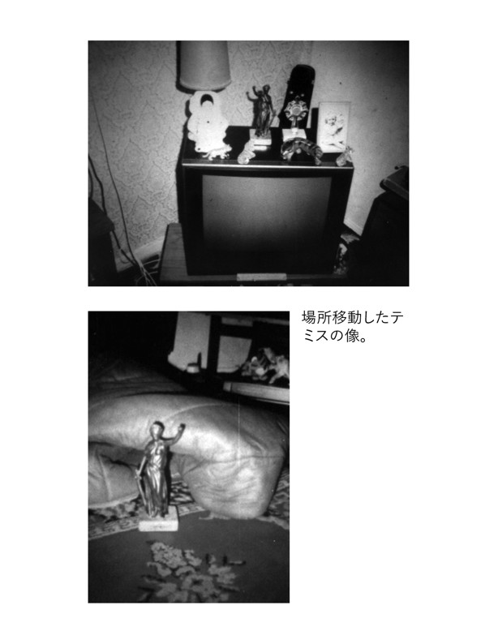

| The Rochdale Poltergeist [Japanese Edition] | |
| Ashford, Jenny & Mera, Steve | |
| (2016) | |
ロッチデールのポルターガイスト
2015年 第一刷発行�span lang=JA>
著者 ジェニー・アッシュフォード、スティーブ・メラ
訳者
発行
印刷
製本
前書き
ホラー小説を書くのに沢山時間を費やしていれば、実際の生活に何か不思議なことが起きてきたとしても驚くべきではないのかもしれない。
2015年の三月に私のパートナーで以前ポルターガイストのフォーカス（焦点）であったトム・ロスと一緒に「マンモスマウンテン・ポルターガイスト」を出版した時には、それがどんな扉を開くことになるのか、知る由もなかった。正直言って、トムの話を聞いたり、その本のために幾つかのケースの調査をした以外は、超常現象についてはあまり知らなかったし、今だってそういう現象については懐疑心でいっぱいなのだ。その本のプロモーションをするにあたって、超常現象に関する色々なラジオ番組やポッドキャストでそういった現象を信じている番組ホストにインタビューされたりする時も、私の懐疑的な姿勢は崩さなかった。とは言ってももちろん、マンモスマウンテンの事例は正真正銘の真実だと思っている。だが、スティーブ・メラに出会った時に私の懐疑心は新たな打撃を受けることになった。
この本に書いてある尋常でない出来事に関連して彼の名前は知っていたが、実際に彼にあったのはトムが最初だった。トムはフェイスブックを通してスティーブにコンタクトして、私たちの本と自分の体験を話し、意気投合してオンラインで友達になった。それからトムは「マンモスマウンテン・ポルターガイスト」の本をイギリスのスティーブの元に送った。スティーブはそれを読んで感銘を受けてくれたらしく、Manchester Association of Paranormal Investigation & Training MAPIT - マンチェスター超常現象調査及び訓練協会）の出版するPhenomena Magazineに素晴らしい書評を書いてくれた。
MAPITはもともと1974年にUFOの報告を中心に研究するために設置されたが、後に他の超常現象も取り扱うようになった。彼らのウェブサイトには、「1996年より、市議会、住宅課、ビジネス、警察、警視庁の捜査課、会社などの為に機密の調査をする」ことを専門にしていると書いてある。彼らは厳密な科学的調査をすると言う立場をとっており、会長のスティーブがこの合理的なアプローチをしてくれたということがトムと私にとって重要なことだった。
トムとスティーブの話し合いで、スティーブが30年以上のキャリアの中で関わった何千ものケースの中で本当に説明しがたい現象だと信じられるものは一握りしかなかったということが明らかになった。トムがそれらについて質問すると、スティーブはその中から２件、私たちが「異常現象」、特にポルターガイストの現象と呼ぶのにふさわしい証拠があるものを説明してくれた。そしてトムは私がそのケースを本としてまとめることを勧めた。スティーブは喜んで承諾し、こうして私があなたがいま手にしているこの本に関わることになった次第である。
＊＊＊
それから数週間、トムと私はマンチェスターの自宅にいるスティーブをスカイプを通じてインタビューし、彼はポルターガイストの領域についての大変興味深い調査について話してくれた。話をしてのスティーブは、異常現象、特にロッチデールのケースについては信用できる上、理性的かつ現実的な人物であると言う印象を受けた。彼の調査方法は良く考えられている上、厳しく行われ、偽物や自然現象が超常と間違えられるような可能性も考慮に入れていた。彼は私たちに向かって真剣に、ロッチデール調査の前には、こんなに動揺させられたり、自分の選んだキャリアを疑わせられるようなケースに会ったことがなかったと言った。
ロッチデールの小さな家で起こった事件は別格だった。「その時まではあまり実体験がなかったから異常現象に興味を持って楽しんでいたんだ。そして実際に体験した。その時、なんてことだ、本当に自分はこれを続けて行きたいのか？と思った。わからなくなったんだ。」
読者はもちろん、自分自身でここに書かれているケースの信ぴょう性を判断できるだろう。私としてはロッチデールでの出来事をスティーブ・メラが話した通りに、誇張や飾りをせずに書いたまでである。スティーブは親切にも自分のメモや、写真を提供してくれ、そのうちの幾つかはこの本に掲載してある。さらにこのケースに関連のある情報は、MAPITのウェブサイト、ロッチデール事件の新聞記事、他の異常現象についての本やウェブサイトになどに掲載されている情報などからも収集した。
スティーブには、この企画のために膨大な時間とエネルギーを費やしてもらった上、私とトムのひっきりなしの質問攻撃を受け止めてくれたことに心から感謝している。さらにトムには私たちの出会いをお膳立てしてくれ、全体が動き出すきっかけをくれたことにお礼を言いたい。
スティーブからは、ピーター、アリシア、ヴァル、ヴィック、キャロルに感謝の気持ちを伝える。
第1章
SEP - 科学的超心理学会は、母団体であるMAPIT - マンチェスター超常現象調査及び訓練協会の中にオフィスを構えている。MAPIT は本来、1974年にUFOの研究のために作られた団体だったが、のちにイギリスのマンチェスター付近での他の特異な現象、幽霊現象、不思議な生き物の目撃や、他のミステリアスな動向などにも活動を広げた。
それは1995年７月23日のことだった。イギリスは歴史的な熱波に包まれていたが、それ以外は特になんでもない普通の日だった。超心理学者でMAPITの会長のスティーブ・メラはいつものように自分のオフィスにおり、特に何も変わったことはなかった。実際、この日が何ヶ月にも及ぶ苦難の始めで、挙げ句の果てにスティーブの生活と懐疑的な世界観をひっくり返し、のちに彼が数十年かけて築いてきた自らの職業に疑いを持つようになる日だなどという兆候は何一つなかった。
秘書がスティーブのオフィスに入ってきて、その日のマンチェスター・イブニング・ニューズを、ある記事のところを開いて手渡した。見出しには、「不気味なシミが家族を家から追い出す」、とありスティーブは笑いをもらした。見出しの書き方に、と言うよりは掲載されていた写真のせいだった。
写真には、三人家族が相当の水の被害を受けた天井を見上げており、男性はモップを掲げて水のシミを乾かそうと無駄な努力をしているように見える様子が写っていた。その下にはもう一つの写真があり、小さな変哲もないトタン壁のバンガローが写っており、短い記事には、説明のつかない水の噴出で家具のほとんどが台無しになってしまったガーナー家の苦労が書かれていた。家族はロッチデールの市議会になんども通報してきたものの、これ、と言った水源は見つからずじまいだった。
妻であり母であるヴェラ・ガードナーは超自然な現象、例えばポルターガイストとか、妻が再婚したことに「不満を持って」いる亡くなった夫の霊のせいではないかと疑っていた。家族によると、地元の教会の牧師に頼んで家を祝福してもらったのだが、何も効果がなかった。
スティーブは記事を興味深く読んだ。家族はこの災難が始まってから10ヶ月も経過した後に新聞社に行ったのだから、市議会は家族が申し出ている状況の原因について何も特定できていないということだと判断した。翌日、彼はロッチデールの市議会に連絡を取って事情を聞いた。
市議会からは、ガードナーの家族、ヴェラ・ガードナー、二度目の夫のジム、最初の結婚からの娘のジャネット34歳、が市議会の所有するフォックスホールズ・クローズの借家人で、家のひどい水被害について何度も苦情を言ってきたが、水の原因は突き止めることができなかったという確認が取れた。市議会は明らかに、家族が故意に損害を装って、よその物件に移ろうとしているとして対応していた。そういうことをする家族も珍しくはないのだ。スティーブは、新聞記事の家族の話に興味を持ったので、市議会がもし彼に調査を依頼したかったら連絡をくれるように自分の連絡先を残した。そしてそのことは忘れていた。
しかし二日後、ロッチデールの市議会はオフィスにいたスティーブに連絡し、フォックスホールズ・クローズの物件の被害についての会議に出席したいか問い合わせてきた。この件については市議会は明らかにお手上げで、超常現象捜査チームを参加させて報告されている被害についての意見を聞こうということになったらしい、というのも自分たちの捜査の結果、明らかな原因は見つからなかったからだ。スティーブは了承して、会議の時には二人の同僚の捜査員をともに出席した。市議会員も二人出席した。
会議では市の職員は基本的にスティーブがもう知っていることを繰り返した。ガードナー家に出ている被害の原因が全くわからないこと、家族自身がわざと被害を起こしているのでない限りは。市議会はこのケースについてこれ以上公になることを防ぎたかった。マイナスの宣伝をされ続けると他の物件を貸し出す妨げになるからだ。
このため、市議会はMAPITの協力を受け入れて問題を究極的に解明し、何か不正が行われていないかを捜査する姿勢だった。もし何も原因が明らかにならず、または原因が超常現象ということになったらこの家族の為にどんな処置を取ればいいのか、例えばこの妨害をなんとかして止める、または家族を引っ越させるなど、意見を聞く準備があった。スティーブと彼のチームはこのケースに手をかすことに同意し、早速家族をインタビューする手はずを整えた。
＊＊＊
フォックスホールズ・クローズは小さな行き止まりの道で、マンチェスターの中心街から北北西16キロほどの市場街、ロッチデールにある。およそ１２軒ぐらいの小さなバンガロー式の家が立ち並ぶ。第二次世界大戦の後に、住宅難を解消する為にウインストン・チャーチルの要請で建てられたものだ。フォックスホールズ・クローズの家のほとんどはガードナー家も含めて、アルミでできた小さいプレハブ住宅で、広さは65平米以下だ。
スティーブは車３台の行列でガードナー家に向かう途中、今度の件は今までのMAPITの件と違って機密保持が難しいことを残念に思っていた。ガードナー家の問題はすでに新聞などに取り上げられている上、住んでいる通りはとても小さくて家と家が密接しており、近所は皆すでにこの何ヶ月間かに何が起こっているか承知していた。車が通りに入るとき、スティーブは近所の人たちが皆、好奇心旺盛に窓に鼻をくっつけて外を見ている場面を想像してちょっとうんざりした。事が既に公になっていることは調査を難しくするけれども、いつもの通り、スティーブが一番気にしていたのはこれから助ける家族の安全だった。
ガードナー家の入り口に最初に着いたのはスティーブで、それから彼がよくチームを組むアリシア・リーと作家のピーター・ヒューを含む五人の調査員たちが続いた。ノックするとドアが開いて、70代の小柄な女性が顔を出した。新聞の写真で見覚えのある、ヴェラ・ガードナーだ。彼女はスティーブとチームの皆に挨拶をすると、入り口に立ったまま、突然泣き出した。
「彼女は泣きながら話をしようとするのだが、明らかに苦労していた」とスティーブは言う。「自分たちは手助けをする為に来たのだから、焦ることはない、好きなだけ時間をかけていいから、と言ってあげたよ。」その日は単に初回のインタビューで、この訪問の目的は家族と会って、今までどんな事が起こったかを詳しく聞くことと家の周りを歩いてみて土地勘をつかみ、願わくば何か手がかりになることを見つけることだった。
チームの皆はバンガローの中に入っていった。まずはじめにスティーブが気づいたのは湿り気特有の匂い、「濡れた犬の匂い」だった。次に目を惹いたのは、大きなビニールのシートが床や家具のほとんどを覆っていることだった。ヴェラによると、ビニールのシートは市議会が、ここ数ヶ月間に頻繁に起こる理由不明の水害から残りの家具を守る為に提供したものだった。家の中の物で怪しい水のおかげで既にダメになってしまったものもあり、市議会は何回か既に敷地に赴いてパイプの漏れなど何か合理的な損傷などを見つけようとしたが、水道管関係には何も異常を見つけることができなかった、とヴェラは不服そうだった。
スティーブとチームはビニールシートをくしゃくしゃ言わせながら歩いて居間に入った。ヴェラがソファーのビニールシートを除けて皆に座るように言った。その時、ここ二年間ヴェラの夫であるジム・ガードナーがキッチンから顔を出して自己紹介した。ジムは髭を生やし、ヴェラと同じ歳ぐらい、長い髪を後ろにポニーテールに縛っており、親しみやすくおおらかで誠実な印象を与えた。お茶を入れるかと聞き、スティーブと調査員の二人が返事をしたので、ジムは用意をする為にまたキッチンに姿を消した。
ヴェラはソファーの向かい側の椅子に座り、まだ取り乱しているようだったが、話す準備はできたようだった。スティーブはなるべく話しやすいように気を使って、彼女に始めから、彼女と家族がこの試練のなかで見たり気づいたりしたことを話してくれるように頼んだ。ヴェラは時々湧いてくる涙をこらえながら話し始めた。
第2章
この異変は1年ほど前に急に始まった。ヴェラは始めは全く何が起きているか分からず、普通の人がするように、その現象は自然が原因だろうと思っていた。
小さな家をざっと見渡して、スティーブはこの家族は超常現象などには一切関心が無いということを記憶に留めていた。見えるところにはそれ関係の本や超常現象の映画やテレビ番組のビデオなども無かった。ガードナー家族は全く普通の年配の夫婦で、普通に波風を立てずに暮らしている人達で、目立ちたい為に作り話をでっち上げるようなタイプでは全く無いことにも確認できた。これは家族の経験が純粋なものであるという確証にはならないが、スティーブはこの件について集める情報のデータファイルに追加すべき詳細として記録しておいた。
ヴェラの説明によると、始めに起こったことは、どこからともなく現れた水が天井からポタポタと落ちてきたことだった。キッチンでサンドイッチを作っていたら、急に大粒の水が降り始めて、家の中で雨が降っているようだった。スティーブは正確を期す為に聞いた。「天井のどこから水は落ちてきたんですか？」
ヴェラの答えは簡単だった。「全部から。」
それは、まるで、光ってつるつるした平らな水の層が急に意味もなく天井に出現して、激しい雨降りのように落ち始めたと言う。彼女はこの層で雨粒が形成され、重力で下に落ちるのがはっきり見えたという。
始めて水が降ってきた時、びっくりしたヴェラはキッチンの用具に覆いをかけて守ろうとした。数分後、奇怪な「雨」は降ってきたと同様突然やみ、キッチンはずぶ濡れだったが天井は不思議なことに乾いていた。水が見えないポケットに吸い込まれたようだった。当然、屋根裏の水道管が破裂したと思ったヴェラは市議会に連絡し、役員が来て調べた。
けれども市議会の役員が調べると、屋根裏は全く乾いていて埃だらけで、水があった形跡は全くなく、屋根裏だけでなく家のどこにもなかった。それに、こういったプレハブの住宅は屋根裏や天井には水道管は通っておらず、水源は全て地下の配管から来ており、家の中には縁の下から細めの管を通して供給される、と彼らはヴェラに説明した。「もし水が漏れているなら、水道管からではない」というのが結論だった。さらに、イギリスで起きている熱波の為に、ホースの使用が制限されており、国中の水の消費が厳しく制限されているとのことだった。
徹底的に調べる為に、市議会は家の電気系のテストも行ったが、何も異常は認められなかった。水漏れの原因が何も見つからず、仕方なく市議会はヴェラに事故処理票を渡して、もしまた何かあったら記入して、連絡をするように支持して帰った。
スティーブはこの話をしているヴェラをよく観察していた。彼の心理学の幅広いバックグラウンドと似たようなケースを数多く調査してきた経験から、異常な現象を説明する証人の行動については深い洞察があった。彼は誰かが正直に話していない事を察知できることにはかなり自信があり、また、話している本人が大げさに話したり、全く作り話をでっち上げている時に無意識に出す、幾つかの「サイン」も読むことができた。
けれども、ヴェラが話している時には偽りの様子は何もなく、話しながらその時の状況を再体験しているだけでなく、その時の苦痛も再体験しているのが見て取れた。スティーブはジムが紅茶のカップを持って居間に戻ってきた時にさらにヴェラの話の信ぴょう性を確信するようになった。ジムが座って話の仲間に加わったとき、彼の姿勢はとてもオープンでリラックスしており、何か後ろめたいことが見つかるのではないかというような焦りなどは全く感じられなかった。フォックスホールズ・クローズの家にはヴェラの方が彼より長く住んでおり、ヴェラが話しをすることに全く異存はないように見え、また彼女の話に追加するのも躊躇しなかった。「10ヶ月ほど前に、後ろのベッドルームの壁に湿ったシミがあるのに気づいたんだ。」ジムが追加した。「市議会が来て、屋根裏を全部見て回ったが何も漏れているものなど見つからなかった。」
スティーブに促されて、ヴェラが続けた。それ以来、何回か水が天井に現れたが、初めの日のように急に壁やドアにまで現れるようになった。「時には水が大きな水滴になって現れ、天井の広い範囲を覆ったかと思うと、さっと消えてしまう。」
水は、明らかに不思議な行動もとった。ジムが付け加えた。「天井に結露した水滴かと思ったんだ。一箇所で始まったかと思うと角から角へと天井を飛んで動き、天井灯の周りを回って行ったように見えた。ベッドルームで始まって、おさまったかと思うとキッチンで始まる。」
「市議会にまた電話をしたら、男性が二人来て屋根裏に上がり、電気屋が天井灯を外している間、私が下のキッチンで傘をさしていたんだ。それぐらいひどかった。キッチンは雨が降ったようにびしょ濡れ。市議会の人たちは原因はさっぱりつかめず、どうしようもなくてキッチンの窓に換気扇をつけて行った。何の役にも立ちはしないが。」
ジムはそれからここ数ヶ月の水の発現をまとめて話してくれた。「キッチンが終わったと思ったら、ジーンのベッドルームで始まった。」「そこに4、5ヶ月とどまっていた。毎日のことで、家族みんなが動揺したよ。ジーンのベッドルームを別の部屋に移したら、まるでわかっているかのように水も移った。市議会からまた人が来て、探知機を持ってきた。結露を検査するために。もちろん、プレハブの住宅では特に暑い時には結露などが起きるけれど、これは全くバカらしかったよ。」
この「家の中の雨」では、水滴は何分後かには消え、現れた表面はカラカラに乾いていた。けれども居間の天井をざっと見渡したところ茶色い輪っかのシミの形跡は残っていた。スティーブにはなん百ものばらばらな茶色い輪っかのシミが、天井一面のペンキを塗った木質系の壁紙に残っているのがはっきり見えた。
＊＊＊
水が現れてから数日後の夜、事態はさらに悪化した、とヴェラは言った。ヴェラとジムは家の中で前側にある自分たちのベッドルームで寝ていた。すると、午前3時ごろ、二人ともとても近くではっきり聞こえる足音で目が覚めた。誰かが部屋の中で行ったり来たりしているようだった。ジムもまた、その足音をはっきり聞いたと同調し、興味深いことを付け加えた。足音は、とジムは言った。誰かが普通の床を歩いているように聞こえたけれども、彼らのベッドルームの床はその時降ってくる水のためにビニールシートで覆われていた。スティーブは自分たちのチームが居間に入ってきた時の大きなくしゃくしゃという音を思い出して、この小さいが興味深い事実をメモした。
それから、とヴェラは続けた。音の現象はますますひどくなった。足音が毎晩聞こえるようになり、おまけに不気味なノックの音と、壁をひっかく音も加わった。間も無く、ヴェラとジムは奥のベッドルームからの男のいがらっぽい咳を聞いた。そのベッドルームはヴェラが最初の夫と一緒に使っていたものだった。実はこの絶え間ない音が、ヴェラがこの一連の出来事はその部屋で9年前に心臓発作で死んだ最初の夫の霊によって起きているのではないかと疑いだしたきっかけだった。彼女はスティーブに、最初の夫が彼女が再婚したことに腹を立てているのかもしれないと話した。そうだったとしたら何故、不満を現すのがこんなに長く経ってからなのかはわからないけれども。咳の音はジムとヴェラのベッドルームでも起こった。「二人ともベッドに寝ていて、確かに誰かが部屋の隅で咳をしているのが聞こえるんだ」とジムは言った。「少し気味が悪かったけれども家じゅうを調べて、何もおかしなものは見つけなかった。私らのベッドルームでタバコの煙の匂いもして、タバコの紙にリコリスの味がついているような匂いもした。」
霊の仕業だという説をさらに進めて、ヴェラは誰も家にいないはずなのに誰かが口笛を吹いているのもよく聞くとも言った。音は時構わず起こり、いつも空中のどこからとも無く聞こえてくるという。
水と音が数日続いた後、とヴェラは続けた。現象はまた一段階アップした。絵、カップ、小さな置物、花瓶などの小物が突然、壁、カウンター、窓敷居などからものすごいスピードで飛び出し、床に落ちて粉々に壊れるようになった。これもほとんど毎日起こるようになり、総じて、こういった出来事は理解できるパターンなど無く、時間や夜昼構わず、前触れ無しに起こるようだった。ジムは少なくとも一回、居間のドアがひとりでに開くのを見たし、また、物体のテレポートともいえるような現象も見た。「物が見当たらなくなって、数日後に探していない時に変なところに現れる」と。
スティーブとチームはジムとヴェラの話をただひたすら聞いて、ほとんど中断もせず、これまでにあった出来事を全部記録していた。この時になって、この家の三人目の住人である、ヴェラの娘、ジャネットが居間に入ってきた。ジャネットは34歳で長くて真っ直ぐな髪を持ち、母親にびっくりするほど似ていた。彼女は紹介されたが、とても内向的で、逃げるような感じで、話がしたくないように見受けられた。スティーブにはすぐに、この女性は何か精神的な障害があるとわかったが、すぐにヴェラがチームにジャネットの精神年齢は幼い子供と同じなのだと説明した。
密かに、スティーブはこの超常現象が本物ならば、もしかしてジャネットが偶然にもポルターガイストのフォーカスとして使われているのではないかと思った。34歳では、他の記録されたケースに出てくる思春期前や若いティーンエイジのポルターガイストのエージェントとしては明らかに年上だが、障害があることが、年齢が不一致である事の要素であるかもしれないと考えた。
紹介された後、ジャネットはただ居間に座ってそこで起きている事を見ていた。その場に居たいけれども話の内容には特に参加する気もないといった風だった。
＊＊＊
ガードナー夫婦のこれまでの出来事の簡単な説明が終わった後、ヴェラとジムはスティーブとチームに家の中を見せてまわった。決まりのプロトコルで、スティーブは写真を撮ったりいろいろ見張ったりするためにチームの一人を居間に残して、自分と残りのメンバーはガードナー夫婦に従った。
最初に入ったのはジャネットの部屋で、家の前の部分にあり、ジムとヴェラのベッドルームと廊下を隔てて向かい側にある。スティーブはここにもビニールシートがベッドと家具を覆っている事と、同じ茶色の水のシミが天井のペンキを汚しているのを見た。それ以外、部屋はいたって普通だった。ただ、部屋を見ているときにヴェラが、ナイトスタンドの上のラジオ時計が自分で勝手につくと言う事に気がついたと言った。コンセントはつながっておらず、電池も入っていなかったのに、だ。
「ラジオがついたときに何が聞こえますか？」とスティーブは聞いてみた。
ヴェラは音楽や通常のラジオの放送の音ではなく、ラジオを通して言葉が話されるといい、その言葉はだいたいガードナーの家族に何かしら関係のある言葉だという。ジムはその音を、タクシーの中で聞く無線からの音のようだと言った。はっきりした言葉が幾つか聞こえて、その他は雑音なのだそうだ。
ジャネットの部屋を出る前に、ジムがチームに「ここが、電池が危なくぶつかるところだった場所だ。」と言った。どういう事か説明を求められてジムが言うには、ある日ジャネットが家にいないときに彼女の部屋の前を通って廊下を歩いていた。ドアは開いていたのだが、彼が通り過ぎるときに単2の乾電池が急に部屋から飛び出してきて、彼の頭を危うく外して壁に激突し、しっくいの壁をへこませた。スティーブはジムが言った場所を調べて、確かに廊下の壁に豆粒ほどの大きさの凹みを見つけた。
＊＊＊
それから一行は後ろのベッドルームに向かった。この部屋がヴェラの最初の夫が亡くなった部屋で、当然もう使われていなかった。ベッドとタンスは家の他の部屋と同じくビニールシートで覆われており、天井には馴染みの水のシミがあり、あちこちに箱が積み重ねてあって、この部屋が物置として使われている事がわかった。特に何も変わった事は見当たらないので、一行は家のツアーを続けた。
バスルームに移動して、ヴェラがいうには、ほとんど毎朝、家族の誰かが洗面台で顔を洗ったりして朝の準備をしていると、歯ブラシが置き場所から上に飛び上がって浴槽に落ちる。同じ事が歯磨き粉のチューブやカミソリなど洗面台の傍に置いてある小さなものに起こる。不思議な事に、このような事は誰かがバスルームにいて見ているときに起きた。誰も居ないときにはバスルームの中の物は動かなかった。これは家の中の他の部屋の物が、人がいてもいなくても起こる動きとは違っていた。
はじめに超常現象の起こったキッチンで、ヴェラはとってあった割れた紅茶茶碗や皿などを見せた。頻繁に、家族が家の他の場所に居るときにキッチンからものの割れる音がして、行ってみると色々な食器が床の上に砕けている。これは大方、キッチンに誰も居ないときに起こった。
次の部屋、ヴェラとジムのベッドルームのドアを開けると、ヴェラはまた泣き始めた。「ここがあの人 の声が聞こえる場所なんですよ。」明らかに、彼女が聞いたぜーぜーした咳や口笛は前の夫の幽霊の仕業だと信じているようだった。スティーブはただ頷いておいた。この時点では、家族が説明した事象の特徴から考えると、家が霊によって祟られているとはちっとも思えなかった。それよりは、現象が幽霊が取るであろう行動を真似しているように思えた。でも、この考えは家族には話さないでおいた。
ここで、グループは居間に続く廊下を通っていた。ヴェラは、時々廊下で不思議な匂いがすると行ったが、詳しくは説明しなかった。その時は何も普通でない匂いはしなかったので、皆居間に戻ってきて腰を下ろした。
「牧師以外に、」一同が落ち着くとスティーブは聞いた。「この事象を見た人たちはいますか？」
ヴェラは、キッチンで物が壊れたときには近所の人が二人居合わせたと言った。また、以前はよく遊びにきたジャネットの親友が、ジャネットの部屋で何か見えないものが頭の後ろを打っている気がして大変怖がった。その娘はジャネットとまだ連絡はとっており、たまに会ったりするけれども、その時以来フォックスホールズ・クローズには足を踏み入れなくなったそうだ。
＊＊＊
MAPITのチームはガードナー家に一時間ちょっとおり、スティーブは徹底調査に進むためのデータは十分に取れたと思った。いつもの形式通りに家族に事故処理票をわたして、超常現象が起きたら細かく全部記録すると共に、それが起こった時間も記録するように指示した。
そして、二週間後に二度目の訪問をする日取りも取り付けた。この訪問は一度目よりずっと細部にわたって行われ、調査員が視聴覚機材を持ち込んで、現象の証拠を記録する試みをする予定になっていた。スティーブはさらに家族にMAPITの連絡先を渡して、次の訪問まで、チームは24時間体制で非常事態に臨んでおり、ガードナー家の人達は夜昼構わず、何か手に負えない事態が起きたらいつでも連絡するように言っておいた。
チームが家から去ろうとしている時に、スティーブはこういう調査で必ず行うある事をした。上手にそっとグループから離れて小さな録音機をソファーのクッションの後ろに隠したのだ。こうした事をするのは、調査員たちが去ったすぐ後に、家族達同士でどんな会話がなされるか知るためだった。家族がインチキをしている場合は、申し立てをした当人達はよく、「信じたと思う？」などという会話をし、ケース自体が嘘であることの強い証拠になり、それ以上チームが調査する手間を省けることがわかったからだった。スティーブはガードナー家の人達がインチキをしているとは思わなかったが、ちょっと小細工をしてみるのは調査の主要な一部だった。彼は家族に気づかれずにチームの仲間と合流した。
＊＊＊
家を離れて、車３台のキャラバン隊は少し道を走って、約5分ほど待った。ピーター・ヒューは隠し録音機が家族の実態を暴くだろうかなどと声に出して言っていたが、スティーブとアリシアは黙っていた。
一定の時間がすぎると、スティーブはガードナー家に戻り、ドアをノックした。ヴェラが出てくるとスティーブは機器の一部を起き忘れたと告げ、ヴェラは彼を中に通した。そして録音機を持ってスティーブは仲間のところに戻った。
車の中でピーターとアリシアが見守る中、スティーブはテープを巻き戻してプレイのボタンを押した。チームは自分たちが去り際の挨拶をしているのを聞き、ドアが閉まる音を聞いた。それから、以前のケースでいつもそうであるように、家族は調査員の訪問について話し始めた。ヴェラの不安そうな声が最初に聞こえた。「あの人達が力になってくれると思う？」
ジムが自前のそっけない調子で、それでもちょっと不満げに、「さて、市議会は信じなかったんだ。あの人達は信じてくれるかどうか。」
もしガードナー家の人々が体験について嘘を言っているのだとしたら、明らかにその道のマスターと言えただろう。
第3章
二度目の訪問の前の二週間、ガードナー家からは何も音さたはなかった。それが良いことなのかどうかスティーブはわからなかった。
予定通り、決められた日にMAPITのチームは機器を積んでフォオックスホールズ・クローズに向かった。以前のように家族はチームを歓迎し、おきまりのお茶を勧められた。
皆が落ち着くと、スティーブは残していった事故報告書を見せてくれるように言った。彼はひとめでたくさんの記述があることを見て取った。事象は２ページにわたって記録されており、ちょっと見ても現象はまだ毎日起きており、起きる時間はまちまちだということがわかった。ヴェラは以前の現象と似た現象が何度か起きたことを記録していた。天井や壁から落ちてくる水、実体のない足音、咳、小さな物が棚から飛び出してくるなどだ。この期間にまた市議会からも訪問があって、また水漏れなどの形跡は何もなく、家に起こっている現象の説明になる物理的な問題は何も見つからなかった、とも記述してあった。
レポートを注意深く読んだ後、スティーブは屋根裏のスペースを見ても良いかどうか聞いてみた。屋根裏へはバスルームの近くの廊下の天井にある小さな戸から入れるようになっている。家族は何も問題なく承知し、ジムは裏へ梯子と懐中電灯を取りに行った。彼が戻ってくると、チームは梯子を持ったジムを先頭、スティーブをしんがりに、列を作って廊下を歩いた。彼は廊下がとても暑かったことを覚えていた。その頃は8月の半ばで、熱波はまだ収まらず、小さな家には冷房がなかった。
廊下を進んでいくと、スティーブは急に右のこめかみのところに水滴が一滴当たるのを感じた。天井から落ちてきたらしかった。それは大きな水滴で、雨粒などより大きかった。頭に手をやって、それから指を顔の前に近づけた。確かに普通の水のように見え、感触もそうだった。他の人には言わずに、彼は天井を見上げた。天井は全く乾いていて、水滴が落ちてきた形跡は何もなかった。「まるで狙ったように思えた。」とスティーブは言う。
この出来事を彼は他のメンバーには話さなかった、というのは皆の事前のパニックに陥るのや、このタイプの捜査にありがちな「私も」シンドロームを避けたかったのだ。「この時点では、全てを受け入れて、次に何が起こるか待ち受けていた」と彼は言い、大したことでもないことで捜査の順序立てを狂わせたくなかったのだと付け加えた。それでも、廊下を歩いている時に彼は天井に注意を払って水の一滴がどこから来たのか見極めようとした。が、何もなかった。
ジムは梯子を床に降ろし、スティーブが昇って屋根裏の戸を開けられるようにした。昇ってみると、家のアルミ屋根の真下にある屋根裏は家のどこよりも暑かった。懐中電灯を照らして見て、スティーブには水や湿気の痕跡など全く見えなかった。水が屋根裏のどこかに接触した形跡も全くなかった。彼は断熱材を持ち上げてその下の漆喰の部分も調べてみたが、そこも砂漠のように乾燥していた。水がどこかから来ているとしても、屋根裏ではないとわかって満足したスティーブは梯子を降りた。ジムは梯子を外に戻してから家に入ってきて、居間に集まったグループに合流した。
スティーブが頼んで、少しの間ジムとヴェラはこの捜査の間の二週間に起こった事を詳しく説明したが、以前とほとんど似たような現象だった。
そのとき急に、ジャネットが居間に入ってきた。ひどく取り乱して、ちょっと狂ったようでさえあった。そして、「また起こってる！」と叫んだ。
そこにいた全員が、家族と超常現象チームの皆、一緒に飛び上がってジャネットに続いて廊下に出た。幾つもの目が彼女の指差す先の廊下の天井を見た。
そこで彼らが見たものは、驚き以外の何物でもなかった。「天井に水があるんだ」とスティーブは言う。「そんなものは今までに見たこともなかった。まさに目の前に見ていながら、視覚として頭で理解しようとしているんだ。」
というのは、水は水らしからぬ不可能な行動をとっていたからだ。ジムが以前の訪問のときに似たような事象を説明していたが、実際に自分で目撃するのはまた別物だった。「まるで水に知性があるようだった。」とスティーブは説明した。水は彼の方に向かって移動していた。一秒間に1.5 cmぐらいの速度で、大きくなるとともに一貫して増えていた。動きながら輝いていた。「水滴を一粒も落とさず、知的に天井を動いていった。それから天井灯のまわりを廻って行く経路を選んだ。まるで天井灯が邪魔になるので避けて通らなければならないとわかっているみたいにだ。」
この驚くべき光景から無理やり目を離して、スティーブは両側にいる二人の調査員を見た。彼らも同じように口をぽっかり開けて、魔法にかかったように天井に見入っており、カメラは役にも立たずにだらっとした手から下がっていた。「写真を撮れ！」とスティーブは命令した。
チームはショックから立ち直って、パシャパシャと写真を取り始めた。スティーブは水が不可能な状態で天井を這進んで行く様子を、猛烈にメモをとったりスケッチをし始めた。「動き方は、まず小さな水のしずくの粒が来て、それから残りの水がそれにくっついていく。」「それからある時点で小さな指か、トゲのように突き出て、残りの水が従う。」
ピーターは後にこんな風に説明した。「それはまるで天井が床になって、誰かがコップいっぱいの水を投げたようだった。重力に逆らっているんだ。」
スティーブはそれでも、水が動いている間に持って来たキットから小さなプラスチックのサンプル容器を取り出す理性があった。彼は少しの水をすくい取って容器に入れ、蓋をしっかり閉め、それをビニール袋に入れて時間と収集した状況をラベルに書いた。
水は狐につままれたような証人たちの前の天井をほぼ５分間くねくねと動き、そのあと1分ほど急に動きを止め、それからもと来た天井に素早く蒸発して消えて行くようだった。数分後、天井は触っても乾いていた。
皆が今確かに見た信じがたい現象と、感じている興奮にもかかわらず、やらなければならないことがまだあった。スティーブがバスルームの蛇口から比較するためのサンプルを摂取する一方、ピーター・ヒューは天井裏に自ら昇ってチェックした。スティーブが見たのと同じように、屋根裏は乾いて埃っぽく整然としていた。
チームと家族はまた居間に集合した。ヴェラが皆に言った。「ちょうどこういう風に起こるんです。時には水が壁やドアにただ現れて、数分間ポタポタと落ちては消える。」スティーブとチームはもっと詳しく調査する訪問を計画するのが待ちきれなかった。次は可能であれば、家族が居ない時にしたかった。その理由は、スティーブが説明するには、まず当然家族がインチキをしている可能性を取り除くこともあるが、媒介となっている疑いのある人間無しで現象が起こるかどうか、誰かはわからないが、フォーカスになっている人間が現象を遠距離から操作できるかどうかを調べることにチームは興味があった。
ヴェラはこの計画の筋が通っていることを理解し、調査隊だけで家にとどまりたい時はジムとジャネットと一緒に彼女の妹の家に行くことに同意した。事の詳細を相談している時に、キッチンのドアの近くに立っていたジムが叫び声をあげた。
「ほら、まただ！」
スティーブは飛び上ってキッチンに向かい、ヴェラと他の者たちもすぐに続いた。そこに着いた時彼が見たのは驚くべき、そして滑稽とも言える場面だった。
ジムが、キッチンの隅に立って傘をさしていたのだ。彼はニヤニヤしていた。
「キッチンで雨が降っていたんだ。」スティーブは簡単に言った。「見上げたら、キッチンの天井がさっき廊下で見たのと同じように覆われていた。キラキラと光った厚さ1.5センチ位の水の層だ。でも今度は、水が急に膨らんで、水滴になって床に落ちていた。これが何千回も、キッチンのあちこちで起こっていた。雨粒は大きくて、ただそこいらじゅうに降っていた。ミルクの入ったカップに水滴が落ちて、ミルクをはね飛ばしているのが見えた。」
「こんなことがしょっちゅう起こるんですか？」とスティーブは聞いた。
ジムは大したことではない、という調子で「週に二度ぐらいは。」と答えた。彼はまだにこにこしながら、こんな時のためにキッチンの隅に立てかけてあった傘をさして立っていた。
「こんなのはばかげている、」とスティーブは言った。今になってみると、「その時考えていたのは、これが自分の家だったらモップを持って走り回っているだろうに、なんでジムはただ突っ立っているんだ、ということだった。どうせ皆濡れるのだから、待って後で拭けば良いという感じだった。ジムは掃除にかかる前にその事象が終わるのを待っていたんだ。」
信じられない面持ちでスティーブが雨を見ていると、確かに雨の数滴は下から上へ昇っているように見えた。それはなんとも不思議な光景だったので、最初は気のせいかと思った。
それからおよそ1分後に雨は次第に小降りになってきて、止んだ。キッチンは強い雨が10分以上降り注いだようにぐっしょり濡れていた。
「床も水だらけ、キッチンカウンターの上も、カップも、流しも、私の肩も髪も、水でびっしょりだった。メガネさえも濡れていた。」とスティーブは言う。廊下の時と同じように、水はさっと消えた。「まるで水をヒーターを使って乾かしたように、そんなふうに水が小さくなった。そしてさっと消える。でも水があったところにうっすらと茶色の輪っかが残るんだ。それほど早く乾いた。」
「ああ、私のキッチンが！」ヴェラが明らかに取り乱してモップを取りに行った。
「心配しないで。全部片付くから。」とスティーブは安心させるために言った。
ジムは傘をたたんで、彼とヴェラが片付けてキッチンのものが駄目になっていないかを確かめる間、居間で待っていてくれるよう、チームに頼んだ。チームは了承した。そしてジムとヴェラはなんとかキッチンを普通の状態に戻す努力をした後に戻ってきた。ヴェラはいつ家を空けられるか、手はずが整い次第すぐに連絡すると言い、チームは帰り支度を始め、ガードナーの家族にもう一度、非常緊急の連絡先を覚えているか確認した。この時点ではスティーブは調査にどの位の時間がかかるかわからなかったが、連絡が密になることははっきりしていた。二度目にこの家を離れる時は、皆さっき目撃したことにまだ興奮していた。
チームの誰も、もうガードナーの家族がインチキだとは疑っていなかった。皆、自分の目で現象を見たのだ。家族の言っていたことは全て本当だということで意見が一致した。フォックスホールズ・クローズでは確かに異常な何かが起きていて、スティーブとチームはそれが何か明らかにしたかった。
第4章
翌日、ピーター・ヒューは回収した水のサンプルを北西水研究所へ分析に出した。北西は過去に何度も使ったことがあり、そこのラボは国内で一番信頼が置けることで知られていた。
その後、チームは集まるともなく集まって、写真を調べたりガードナーの家で何が起きているのか、考えるところを話し合ったりした。現象の特徴は何か？場所移動性があるか、つまり現象は家族が家にいなくても起こるのか、それとも家族が移動した先で起こるのか。超心理学者たちはポルターガイストが現れる時にはフォーカスが中心になっていることを知っており、そのエージェントとなる人物がそこに居る時に起きるものだが、今回のケースでは違うのだろうか？この時点で、チームはほぼ、この現象は残存的なものではない、言い換えればヴェラの前夫の霊が原因ではない、という確信があった。その理由は、現象が一方的ではなく、相互的であるように見えたからである。でも、その可能性も完全に否定したわけではなかった。
もしガードナー家が典型的なポルターガイストの侵入を経験しているのだとしたら、誰がフォーカスだろう、と皆は考えた。ジャネットか？彼女は通常のポルターガイストのエージェントとしてはずっと年上だったが、精神障害があることから有力な候補として考えられた。一応念を入れて、ガードナー家の近所に現象を起こせるような適当な歳の子供がいないかどうかチエックすることも予定に入れた。
それから数日、チームは休むことなく働いた。スティーブは超心理学の文献に没頭し、比較できるケースがないかどうか探した。ポルターガイストの侵入で水が関係している事例は幾つかあったが、ほとんどが説明不可能な床の水たまりとして発現し、不自然に乾いた、というところがガードナー家の水に似ていた。
しかし、1996年の時点では他によく調べられた室内の雨や知能的に動く液体など、ロッチデールで起こったような事象のケースは見つけることができなかった。もちろん、1983年に始まった室内の雨で有名なケースはあり、ペンシルバニアのドン・「雨男」・デッカーのケースや、他にも幾つかこの本の後の章にまとめてあるようなケースはあったのだが、インターネットが使えるようになる以前のことだったのでスティーブはこれらのケースについて知る由もなく、どのみちそれらは超心理学者たちによって充分な調査が行われたものでもなかった。
＊＊＊
数日後、ヴェラが電話をしてきて家族が彼女の妹の家に行く日が決まったといい、それはたった５日後だった。スティーブは家族に聞きたいことがあるから、チームが到着するまで待っていてほしいとヴェラに頼み承諾を得た。
スティーブがいうことには、その日が来ると「戦闘準備万端で家に乗り込んだ」そうだ。チームメンバーは、スティーブ、ピーター、アリシアの他に二人、キャロルとヴァレリーが加わった。フォックスホールズ・クローズに録音機材をたくさん積み込んだ車３台がゆっくり乗り入れた。
家族は約束の通りまだ家にいた。それから20分ほどスティーブはガードナーの家族一人ひとりに、この前の訪問からこのかた何か現象が起こったか聞いた。ヴェラとジムは前に報告したのと同じような出来事を説明したが、ヴェラは付け加えて、ジャネットが目に見えない手で突かれている、と文句を言っていると言った。それはジャネットが眠っている時に起きることが多いが、たまにはただソファーに座ってテレビを見ている時にも起きた。強く突かれるわけではなく、跡も残らないが、ジャネットは急に飛び上がって誰かが触っているといい、とても取り乱すという。スティーブはこの事もメモしておいた。
話の後、家族は家の鍵をチームに預けて、なんでも好きに食べたり飲んだりするように、翌朝の10時に戻るからと言い置いて去った。「さあ、家を占領した。これからがお楽しみの始まりだ、」とスティーブは冗談交じりで言った。
チームはビデオカメラや録音機材を家の中に運び込んで、夜に向けてセットアップを始めた。「まず始めにした事は、ビデオスコープを取り付ける事。一部屋ずつ、カメラでゆっくりと360度、ぐるりと撮影する。こうする事で、もし後で何か動いた物があった時にそれがどこにあったのか、元の位置からどのぐらいの距離を動いたのか再確認する事ができる。」
この作業にだいたい30分ほどかかり、その後主カメラ − とても重くて持ち運びが大変なデジタルカメラ以前の代物 − を居間の隅にテレビの方を向けて設置した。「カメラは特殊な格子の入ったレンズがつけてあって、そのカメラを通してみると網目が見える。ビデオの中で物が動いた時にマス目を使って距離を計算しやすいようにしてあるんだ。」
それからチームは各部屋の標準室温を図った。季節は夏で外はまだ明るかったが、夕闇が近づいており、外の気温は下がってきていた。フォックスホールズ・クローズの家の部屋は全部、ごく普通の気温の範囲で、華氏で70度前後（摂氏21度）だった。実のところ、家の中は何一つ変わった事はなく、静かな気持ちの良い、全く安全そうな外観を呈していた。スティーブといえば、事象を引き起こすかもしれない家族がいないのだから、特に予期せぬ事を経験するなど別に思っていなかった。
ところが、彼は間違っていた。
＊＊＊
チームはお茶を入れて、居間に腰を落ち着けておしゃべりしていた。「基本的に、ただ座ってリラックスして環境をモニターしながら何か起こるか待機していたんだ。」とスティーブは言った。
最初の1時間は尋常でないことは全く起こらなかった。「とても静かだった。外で鳥がさえずっているのが聞こえたよ。」「息がつまるような空気や、異常な匂いや、異常な音など何もなく、全く普通だった。皆、かなりリラックスしていた。9時頃までそこで座っていたけれど、全く何も起こらなかった。それから、もっと積極的に調査をする事にした。」
手順に従って、チームは二つに別れた。それぞれのグループが別々の部屋で30分ずつ過ごす。30分経ったらグループの構成を変えて他の部屋に行く。そうして夜の間に調査員の一人ひとりが全部の部屋で時を過ごす事になる。こうするのは、ある特定の現象が特定の人間に起こるのか、特定の人間の組み合わせに起こるのか調べるためだ、とスティーブは説明した。
それから大事をとって、調査員は一切、デオドラント、香水、ヘアスプレーなどをつけなかった。家の中の異常なにおいがした場合に物質的な原因と間違えられないようにするためだ。部屋に電気がつく場合は、電気をつけて明るくしておいた。「全くの闇の中で調査しなくてはならない理由は何もないし、赤外線カメラなどを使う理由もない。」とスティーブは強調した。「自分たちは暗いところで行った調査から発生する問題を把握している。心理的なリアクション、脳がどう働くか、目がどう働くかなどだ。人は暗闇の中で防御体制に陥りやすい。サバイバルの本能だ。そこに本当は無いものを見たり、聞いたりしがちになるし、そこにあるものを間違って判断したりする。部屋の隅の影になっている部分などだ。」チームは環境の中で物理的に管理できることはすべて把握しようとした。そうすれば起こった現象は確かに尋常で無いと判断することができる。この時点では窓の外がだんだん暗くなってきており、チームは家の外の外気温が華氏8度（摂氏4度）ほど下がったことを記録した。これはごく普通のことだった。
最初のローテーションでは、スティーブとアリシアが家の前側でドアを入って左側にあるジャネットのベッドルームに行った。それぞれ部屋の中で居場所を決め、ただ座って耳をすませた。家の中はとても静かだった。他の調査員たちもそれぞれの持ち場にいたが、皆雑音を立てないように気を使っていた。データに間違いを起こさないように、調査員たちは必要事項以外になるべく話さないように取り決めてあった。
それはちょうど最初の30分が終わる頃で、チームは場所交代をする時間だった。それまでジャネットの部屋では何も起こらず、他のチームが静かだったことから、他でも何も起こらなかったようだった。スティーブは立ち上がってジャネットの部屋のドアのところに行き、部屋を出るところだった。
「急に、肩のすぐ後ろで声がしたんだ。アリシアの声だった。はっきりと、『大丈夫、スティーヴィー？』と言った。」
スティーブは続けた。「スティーヴィー、なんて呼ばれ方はしないんだ。誰も私をそんな風に呼ばない。でもそれはアリシアの声だったので、当然彼女が自分の後ろで言ったと思った。」彼は振り返って、「何？」と言った。
アリシアは驚いて彼を見た。「何って？」
「すぐに変だと思ったのは、声が聞こえた時は肩のすぐ後ろだったので、彼女が真後ろにいると思ったんだ。でも、振り返ってみたら、そうじゃなかった。彼女はまだ部屋の反対側のベッドの向こう側に座っていた。でも、声は右耳のすぐそばで聞こえた。何がなんだかわからなかった。」
「今なんて言った？」とスティーブは聞いた。
「何も言ってないけど。」とアリシアは答えた。
「今、スティーヴィー、って言った？」
「スティーヴィー？」
「たった今、聞こえたんだ。『大丈夫、スティーヴィー』って。君の声だったんだ。」
「私、何も言わなかったわ。何も聞こえなかったし。」アリシアは確かだった。
スティーブは、「これはちょっと変だぞ、と思った。でもあまり気にしなかった。というのは主観的な体験だったから。もし他の誰かが聞いていたなら良かったのだけれど、そうじゃなかった。」しかし、彼が気づいたことは、もしこれがアリシアでなかったのなら、このポルターガイストか何だかは声を真似る能力があり、彼の名前、仮にそれが普段使われない型だったとしても、を知っていたという事だった。
チームは場所の移動を始め、スティーブは自分が聞いた事をチームの他のメンバーに話した。アリシアは自分は喋らなかったし、何も聞こえなかった、と繰り返した。この出来事は未知の分野に入れられ、調査は続いた。今度はスティーブとヴァレリーが居間に行き、キャロルはジャネットの部屋に一人で入った。ピーターとアリシアはジムとヴェラのベッドルームへ向かった。
スティーブとヴァレリーが居間で座ってほんの数分もしないうちに、話し声を聞いた。「機械的な声で、誰かがラジオを通して喋っているようだった。でもラジオ番組のラジオではなくて無線ラジオか何かのようだった。」とスティーブは言う。
キャロルがジャネットの部屋から叫んだ。「誰か、今の聞いた？」
チームの全員が聞いた。皆、ジャネットの部屋に急いで行った。キャロルはベッドに座って、ベッドの脇のナイトスタンドを指差して言った。「ラジオ時計が動き出したの。」
スティーブはラジオを取り上げた。壁のコンセントにさしこまれてないのは明らかだった。裏返して後ろを開けてみた。ラジオに電池は入っていなかった。スティーブはさっとあたりを見渡して、他に何か音の原因になるような物があるかチェックしたが、何も無かった。
「何が聞こえた？」とスティーブは聞いた。「言葉が聞こえたけれど、何を言っているのかはわからなかった。」
キャロルは男の声が、電源の入っていないラジオ時計から聞こえた、と言い張った。こんな経験は初めてで、明らかに彼女はショックを受けていた。声は、と彼女は言った。はっきりと二言、「ジョンが見ている」と言った。
＊＊＊
キャロルはまだ落ち着かなかったが、言葉の記録をとり、場所と、声を聞いた時間を記した。午後10時38分。もう少し詳しく、と言われてキャロルは、声は男性がタクシーの無線を通して話しているように聞こえた、と言った。「ベビーモニターとかそういった機械がタクシーの無線のシグナルを受信して聞こえることがある、というのは私達も知っている。でも、ラジオ時計には電池が入っておらず、コードを差し込んでもなかった。」とスティーブは言う。この出来事は不自然なこととして記録され、調査は続いた。
また30分たった。次のローテーションでスティーブはキャロルとヴァレリーと一緒に使われていない後ろのベッドルームに来た。ヴェラの夫が亡くなった部屋だ。この部屋には電灯が無かったので皆は暗闇の中に座っていた。スティーブがベッドの端に腰掛け、彼の右にキャロル、左にヴァレリーが座った。暗やみの中に皆で座って耳を澄ませていた。今さっきの聴覚の出来事のおかげで、当然皆の耳はどんな小さな音でも聞き逃さない準備ができていた。と言っても、普通の家にありがちなきしみ音などは除外していた。
そこに座って15分ほどは特に何も尋常でない音は聞こえなかった。しかしそれから、皆、奇妙な音を聞いた。
「急に、後ろ1メートルから1メートル半ぐらいのところから、ゼーゼー言う息の音が聞こえたんだ。」とスティーブは言う。それははっきりとした、意図的な音で、男性が息をするのに苦労して喘いでいる音だった。「今のは、なんだ？」とスティーブは思った。数秒後に音はまた聞こえた。重い、ゼーゼー言う息の音で間違いなく人間の音だった。
彼は自分の右と左を見た。部屋はかなり暗くなっていたが、まだチームメンバー達の顔の輪郭ははっきり見ることができた。彼女達の表情から、二人とも聞いたということがわかった。誰も動かなかった。スティーブは、その音がヴェラの死んだ夫の残響の類か、聴覚のトリックで超常現象などでは全く無いのかどうかと疑問に思った。ゆっくりと、彼は首を回して音のした後ろの暗闇を見ようとした。
彼は完全に振り返ることはできなかった。「次の瞬間何が起こったのか、正確に覚えていないんだ。でも、気づいたら、ベッドから降りていた。」
と言うより、明らかにベッドから放り出されて、部屋を横切り、急に数メートル離れた鏡台の前に押し付けられていた。「文字通り、机を押しのけなくてはならなかった。何がどうなったのかさっぱりわからない。ここにいたと思ったら次の瞬間にバン、とあっちに飛ばされていた。」
「あら、なに！」とヴァレリーが叫び、電気のスイッチがあると思った方向の壁に突進した。スティーブは彼女より早く、部屋から飛び出していた。背中がものすごく痛み、強いパニック状態にあった。
「殴られた、」とスティーブは言って、背中を抑えた。
「見てみよう、」とピーターが言った。
スティーブはＴシャツを押し上げ、ピーターとアリシアが彼を囲んだ。スティーブの背中には赤く大きな跡がついており、すでに打ち身の傷になり始めていた。ピーターは写真を撮り始め、スティーブに詳しく状況を話すように聞いていきた。スティーブはまだパニック状態で、「わからない。わからない。ベッドに座っていたと思ったら次の瞬間に部屋の向こうに飛ばされていたんだ。」と繰り返すばかりだった。頭のどこかでは、多分、後ろの部屋に戻って何が起きたのか調べてみるべきだという考えがあったのだが、その時はとてもそんなことをする気にはなれなかった。「その時はただ、逃げたかった。家から出たかった。」と彼は言った。ピーターとアリシアはまだ質問をしようとしていたが、彼は答えられる状態ではなかった。答える替わりに、表のドアのところに行き、鍵をどうにか開けて外に出た。車寄せのはじまで行き、壁のところに座って気を落ち着かせようとした。
彼はそこの20分近く座り、色々な事に思いを巡らしていた。そこから立ち去って、2度と戻って来たくなかった。調査を打ち切りたかった。でも、他のメンバーにもう関わりたくないなどとどうしたらいえるだろうか。彼は超常現象の調査を今まで何年もやってきたが、今さっき体験したようなことは一度も起こらなかったし、また体験したいとも思わなかった。
ピーターとアリシアが外に出てきて、大丈夫かと聞いた。実はあまり大丈夫ではなかったが、彼は匙を投げ出してしまおうと思っていたことは二人には言わなかった。最終的に何とか自分に言い聞かせて家の中に戻ったが、彼は「本当にやりたくなかった。」
「とても慎重に家に戻ったが、不安でたまらなかった。監視されているような気がした。と言うより、狙われているように感じた。他の調査官達は私と同じ体験をしなかったので、私のようには感じていないようだった。一人だけターゲットになって、何かが自分を狙い撃ちしている気がした。だから、恐る恐る調査を続けたんだ。」
家の中に入ると、お茶を入れてトーストを作り、さらに気持ちを落ち着かせようとした。そしてやっと、チームの皆にその体験をしてどんな気がしているか話すことができた。「私は体が大きい。それを部屋の向こうまで1メートルちょっと動かすには相当の力がいる。背中に物理的にパンチをくらった感触もあった。思いっきりの強いパンチだった。でも、同時に電気のショックのようでもあり、弾かれたように自分で自分が動くのを止められなかった。その二つのコンビネーションだった。」
キャロルとヴァレリーも、何が起こったのか当惑していた。部屋の中は暗く、はっきり何が起こったのかはよくわからなかったけれども、二人とも、スティーブはベッドの上にいたと思ったら次の瞬間に部屋の向こう側に行っていた、と言った。
皆動揺しながらも、チームはローテーションを続ける事に決めた。時間は午前2時半で、チームの誰かがコーヒーを沸かした。長い夜になりそうだった。
第5章
スティーブは自分のためにコーヒーを入れようと、キッチンに向かっていた。アリシアがすぐ後ろにいた。居間を通り過ぎようとした時、スティーブは突然立ち止まった。
居間の床の真ん中に、「正義」として知られているギリシャの女神テミスの小さな像が置いてあったのだ。それはプラスチックの像で丈は15センチほどで、皆が夜中、居間に入ったり出たりしている時にそこになかったのは確かだった。もしそこにあったとしたら、気づいていたか、つまづいていたはずだった、というのは部屋の中で人が一番行き来する場所に立っていたからだ。
「どこから来たのかしら？」とアリシアが聞いた。
スティーブはかがんで像を手にした。「さあ。初めて見たよ。」彼はチームの皆を呼んで、誰か他に気づいたか、どこかで以前に見たか聞いた。誰も知らなかった。ピーターは、皆が機材をセッティングしている時にぶつかって倒れたのではないかと言ったが、像が立っていること、皆が到着してから数時間後に急に現れたことから、そのシナリオはありえなかった。そこにわざと置かれたようであって、誰か、もしくは何かが、絶対に気づかれるようにそうしたようだった。
スティーブは像を暖炉のマントルピースの上にとりあえず置き、チームで話し合いをした。結果、最初に家に入った時に撮った、360度のビデオスコープを見て、その物体がはじめにどこにあったか見てみるべきだということで意見が一致した。調査員たちはビデオを巻き戻して、一部屋ずつ像のありかを探した。よく気をつけて見てみたにもかかわらず、テープのどこにも見当たらなかった。では、どこから来たのだろうか。後でヴェラとジムにその像がいつもはどこにあったのか聞くことをメモし、その夜のミステリーのひとつとして記録しておいた。
＊＊＊
少し後にチームがまだ居間でテミスの像が移動したことの驚きが醒めずにいる時に、アリシアが突然息をのんだ。彼女はキッチンのそばのドアのところに立っており、皆が振り返ってみると、アリシアが驚いたわけがすぐわかった。
ドアの表面が瞬間的に無数の水の滴で覆われ、それが床に向かってゆっくりと滴り落ちていたのだった。「ドアの下の部分が濡れているのに気づいたので、皆に知らせようとした時に沢山の小さな雫があっという間にドアを覆ったの。見ている目の前で起こったのよ。」と彼女は言った。
「水はほんの一瞬で現れた。」とスティーブは言う。「そこになかったものが次の瞬間、あるんだ。」彼は水がそこに水滴として現れたことを指摘する。ドアから浸み出してきたのでも、投げられたのでも、散らされたのでもなかった。水滴は完全に丸い型をしており、こわれていなかった。スティーブはドアの後ろ側、キッチンに向かっている側を触ってみたが、全く乾燥していた。水は２分間ほどドアから滴り落ちて、そのあとあっという間に完全に乾いた。前回の訪問での天井と同じだった。1、2分後には居間に向いている側のドアも同じように触ると乾いていた。
スティーブはこの水の現象の再現に強く興味を惹かれ、以前に見たもっとドラマチックな水の現れ方、例えばキッチンの大雨や廊下の天井を、知能をもった蔓のように動く水などを期待して、カメラを構えていた。しかし、今回のこの手の出来事はドアに現れた水ぐらいのようだった。
それから少しして、もっと不思議な雨降りを待つのを諦めた彼らはまたおしゃべりをはじめ、機材をまとめる準備をしながら夜の間に見たことを全部ノートにまとめる作業にかかっていた。夜が明けて、皆は何となくその辺をぶらぶらしており、ガードナー一家が戻る前に朝食でも作ろうかと考えていた。
急に、廊下にキャロルと一緒にいたヴァレリーが声をあげた。「スティーブ、ちょっと来て。」
スティーブは廊下に出た。そこにはヴァレリー、キャロルと、別の部屋から出てきたアリシアがいた。三人ともそこに立って、空気の匂いを嗅いでいた。
スティーブが近づくと、強い、特徴のある香りが鼻をついた。
「匂う？」とヴァレリーが聞いた。
「花のような香りだ」とスティーブは言った。その香りは強く、花が顔のすぐ近くにあるようだった。
ピーターが廊下に出てきた。「何か匂いがするか？」とスティーブは聞いてみた。
ピーターは頷いた。「花だ。とても強い。」
匂いは薄くならずにしばらく続いた。スティーブによると家には花など無く、家全体はどちらかといえば湿った、濡れた犬のような匂いがしていた。花のような香りは、先に見た、水が天井を蛇のように移動していた場所の真下が一番強かった。10分ほどすると、香りは始まった時と同じように突然消えた。さらにスティーブは、それぞれの調査員のレポートを後で読んだ時にそのうちの三人が別の強い匂い、リコリスの入ったタバコの匂いについて述べていたと言った。この匂いは20秒から30秒ほどしか続かなかったが、この匂いに気づいたのは三人それぞれ家の中の別々の場所でだった。
朝食後、機材が撤収された。その後は家族が戻ってくるのを待つだけで他にすることもなかった。ジムとヴェラは少し早く、9時45分ごろ到着した。ジャネットは一緒でなかった。叔母の家にもう1日泊まることにしたのだった。
家の中に足を踏み入れたヴェラの最初の言葉は、「それで、どんな夜でした？」だった。
＊＊＊
スティーブはチームが体験を大まかに伝えるためにガードナー夫妻に居間に来てくれるように頼んだ。彼は起きた出来事を少し割り引いて、家族をこれ以上動揺させないようにしたかったが、居間の椅子に腰を下ろしたジムの顔にちょっと浮かんだ作り笑いから彼がチームの意図を見通していることがわかった。彼の表情は、「さあ、全部話してごらん。」と言っているようだった。
スティーブはテミスの像をマントルピースから取って、ヴェラに見せた。「まずはじめの質問は、」とスティーブは言った。「これはあなたの物ですか？」
ヴェラはそうだと言った。
「テミスですね？」
「そう。休暇で旅行した時に見つけたものよ。」
「どこに置いてありましたか？」とスティーブは聞いた。
「テレビの隣。テレビの右側。」とヴェラは言って、テレビのスタンドの上を指差した。テレビの左側には小さな花瓶が置いてあったが、右側には明らかに何もなかった。
「どのくらい、これを持っているのですか？」
「さあ、もう何年にもなるわね。ジョンが買ってくれたのよ。」
スティーブは躊躇した。彼は、キャロルがラジオ時計から聞いた声を思い出していた。 「ジョンが見ている」と言った声だ。スティーブはヴェラを見た。「ジョンというのは誰です か？」
ヴェラは頭を傾げた。「ええと、私の主人よ。ほら、前に死んだ。」
「ジョンという名前だったんですか？」
「そうよ。」
「いつ、これを買ったんですか？」
ヴェラは思い出そうとした。「休暇を取ったのよね。多分15年ほど前になる。よくある土産物屋で見かけて、家に持って帰るために買ったの。」
「なぜ、テミスを？」スティーブは興味があった。
「別にこれといった理由はなかったの。」とヴェラは言った。明らかに、なぜこれらの質問をされているのか不思議に思っているのがわかった。「ただ気に入ったのよ。」
スティーブがその像はいつでもテレビの右側にあったのかと聞くと、ヴェラは買ってきたときからそこにあったと言った。スティーブはヴェラに、昨日ヴェラとジムが家を離れてから25分も経たないうちに居間の360度のビデオを撮ったことを説明した。スティーブはテープを持ってきて、ガードナー夫妻が見られるように巻き戻した。
ビデオがゆっくりと周って部屋を写し出し、テレビの左側の花瓶が、当然そこにあるべきところに写しだされた。当然、ヴェラとジムはそれまでと同じようにテレビの右側にテミス不思議あるものと思って見ていた。けれどもビデオでは像はそこになかった。ヴェラは不審がった。「でも、いつでもそこにあったのよ！」とビデオの日付を見ながら言い張った。「どこに行ったの？ どうしてそこに無いの？ いつ無くなったの？」
スティーブはその像が定位置からいつ消えて無くなったのか、さっぱりわからないと説明した。わかっているのは、ビデオを撮った時には無かった、そのあと7時間ぐらい消えていた、そして居間の真ん中に現れた、ということだけだった。その間どこに行っていたのか。「ビデオに写っていたら、何かが動かされた時にすぐに気付いたはずだ。」とスティーブは言う。もしかしたら、それはガードナー夫妻がまだ家にいた時に消えていて、ただ気がつかなかっただけだったのかもしれない。確実を記すために、スティーブはヴェラが言った像の元の置き場所と、現れた場所の距離を測り、記録しておいた。
スティーブはジョンについてもっと詳しく知りたかった。チームメンバーの誰も、ヴェラの夫の名前がジョンだとは知らなかった。名前は話題にのぼらなかったのだ。「ジョンはどうして亡くなったのですか？」
「心臓発作です。奥の部屋で死にました。正確にはベッドの中で。」とヴェラは言った。
重ねてスティーブは聞いた。「どうして心臓発作になったのですか」
「ああ、色々病気を抱えていてね。肺気腫だった。いつでも息をするのに苦しがっていました。」
調査員たちは顔を見合わせたが、夜の間に何度かゼーゼーと息をする音が聞こえたことはヴェラには言わなかった。スティーブは質問を続けた。「仕事は？」
「ああそう、」とヴェラは言った。「タクシーの運転手でした。」
部屋は沈黙で静かになった。キャロルがスティーブに近づいて、ちょっと話があると言った。スティーブは皆から離れてキャロルについてキッチンに行った。「私が聞いたのはタクシーの無線だったかもしれないと思う？」とキャロルは囁いた。
「可能性はある。」とスティーブは言った。確かに、現象はヴェラの死んだ夫が起こしているように見えた。しかしスティーブは他に、ポルターガイストの現象で、実体や、何物かが祟りの外見を模すことができる例を見たことがあった。特に、その経験をしている家族がその原因が霊だと思っている場合だった。彼はこのケースもそんな一件かもしれないと思った。ヴェラが調査の早い時期に彼にジョンが彼女を祟っているのかもしれないと話したせいでもあった。もしかしたら、それで辻つまが合うので、家族は霊を「創作」しているのかもしれなかった。「幽霊現象がそんなに急に始まる理由は何もなかった。」とスティーブは言う。「10ヶ月前に青天の霹靂のように始まったんだ。ジョンが死んでからは相当の時間が経っているし、ヴェラとジムは結婚して2年以上経つ。そんなに長く経っているのに、急に霊が彼らの結婚に不満を抱いたというのは理屈が通らない。」
スティーブとキャロルは居間に戻った。今度は、スティーブはジャネットに興味を持っていた。彼女が事象のフォーカスで、たとえ彼女がその場にいなかったとしても現象を引き起こしているかもしれないと疑っていたからだ。彼はヴェラに、ジャネットがどんな風に叔母の家でどんな風だったか聞いた。
「実はあんまりゆっくり休めなくて。」とヴェラは答えた。「いらいらして、眠れなかった。一晩中、何度も目を覚ましていた。あそこでは落ち着けなくて、いる間じゅうピリピリしていました。」
スティーブは頷いた。彼の勘は正しくて、今回はとても稀な、場所を超越して事象を遠距離で操作できるフォーカスが相手なのかもしれないと思った。この情報をメモしてから、彼はヴェラとジムにあまり詳細にいたらずに彼らの夜間の経験の概要を伝えた。何かの音が聞こえ、不自然な匂いがした、と彼は言った。ドアに現れた水滴についても話した。彼は口にこそ出さなかったが、チームが体験した現象からやる気を感じており、すぐにでも次の調査を計画したかった。比較のために今回は家族が家に居るという設定で。ガードナー夫妻もそれに賛成したので、チームは連絡を取ることを約束して去った。
第6章
その日遅く、少し寝て昨夜の睡眠不足を解消してから、スティーブとチームは滞在中にとったメモや写真、ビデオを見直した。ビデオスコープはそれまでに何度か像を探すためにざっと見ていたが、今度は皆で座ってじっくりと観た。そしてその時、驚くべきことを発見した。
メインのビデオカメラは居間の隅にテレビの方を向けてセッティングされ、部屋全体が写るようになっていた。ビデオのある時点で、スティーブが言うには、「皆、何か煙のようなものを見た。テレビの画面から出てきたように見えて、テレビの上に登り、また画面の中にさっと消えた。はっきり見えた。はじめは画面の反射のように見えるのだけれど、テレビの上の空間に登って、テレビの中にまた入っていくんだ。像があったはずの場所にとても近かった。それがビデオに写っていたので、皆喜んだ。」
2度目の調査の前の一週間はヴェラから何の連絡もなかった。その日が来ると、同じ五人の調査員がガードナーの家族とまた座って、この間に何か起きたか聞いた。夫婦は水の出現を含めて、以前と同じような出来事を報告した。一回は水がベッドの真上の天井に現れた。真夜中の2時半に、自分たちの上に降る雨で起こされたという。当然、ベッドを降りて暗闇の中でつまづきながら電気をつけたりベッドの上掛けを守るためにビニールのシートを探したり、混乱状態に陥った。
ヴェラが食器を洗っている時に、窓枠からものが飛び出すのも目撃した。植物と置き物が、流しに立っているヴェラに向かって飛んできた。聴覚的な不審現象も続いた。足音、咳などだ。スティーブはヴェラに、まだその音は死んだ夫と関係があると思うか聞いてみた。彼女は不審げにスティーブを見て、「ええ、やっぱりそう思う。」と言った。スティーブは彼女に、その時点ではまだ何についてもはっきりしたことは言えない、まだ色々な情報を整理している最中で、調査が全て終わるのを待ってから何かしらの結論を出したいのだと説明した。
ガードナー夫妻は、市議会がその週にまた来て、また事故報告書を置いていったと言った。それは冷蔵庫に磁石でとめてあって、スティーブは説明のあった幾つかの新しい現象が書かれているのに気付いた。市議会からの人はちょっと質問すると、ガードナー家のファイルに追加するために前の報告書をとって、新しいものに替えていった、とヴェラは言う。
話が済んだ後、スティーブとチームはまた機材をセッティングしだした。今度の計画では前回のように7時間滞在する予定だった。前回は夜だったので、今回は朝のうちに来て、一日中居るつもりだった。スティーブは家族に、調査員が居ないと思って、なるべく普通に一日を過ごしてほしいと言った。環境を必要以上に変化させないで家族の様子を観察するため、チームの存在を無視してもらいたいと頼んだ。
ジャネットもそこに居たが、スティーブは彼女がなるべく一人で居ることに気付いた。チームメンバーともほとんど喋らなかったが、そこで起きていることに興味はあるようで、たまに自分のベッドルームから出てきて皆が話しているのを聞いていた。
全部準備が出来た後、スティーブは奥のベッドルームに行った。「日中見てみると全く違って見えた。」とスティーブは笑った。チームの他のメンバーは家のあちこちに散った。はじめの数時間は全く何も起こらなかった。不審な物音も、気温の変化も、物体の移動も、水の出現も何もなかった。昼頃にチームは休憩をとり、ヴェラと会話をした。この事件の話をする代わりに、当たり障りのないおしゃべりをして、スティーブに超心理学者として何年ぐらい活動しているかなどを聞いた。スティーブは質問に答えて、なるべくすべてのことが平常であるように務めた。
ランチの後、チームは家の外に調査範囲を広げることにした。特に庭の周りを調べた。携帯用の地磁気と電磁気メーターの他幾つかの機器を装備して、家の周りをスキャンして何か異常ないか調べた。特に不自然なことは何もなかったので、チームはまた家の中に戻った。スティーブはヴェラに、一日のうちどれくらい頻繁に事象が起こるか聞いた。確かに夜の方が昼間よりも頻繁に起こるが、昼間にも起こり、いつでも突然に起こる、と言う答えだった。特に頻度にパターンがあるようには思えず、いつでも起きるし、全く予期していない時に起こった。
4時10分過ぎ頃、チームが居間に集まって座っていると、前の窓のカーテンが自分で勝手に動いた。まだかなり暑かったが、窓は開いて居なかった。皆が見つめる中、カーテンはまるで風で煽られるように波打ったが、感じられるそよ風や隙間風などはなかった。これは一回だけ起こり、後は何も起こらなかったかのように元通りに戻った。チームの皆はまだ作動中の計器を持っていたが、異常は何も記録されていなかった。不思議なカーテンの動きは第2回目の調査でただ一つの事象だった。
一日の終わりにチームは機材を片付けた。調査のこの段階でほとんど何も得られなかったので多少がっかりしていた。しかし調査はまだまだ終わりには程遠かった。とったメモをまとめて、市議会に報告し、ラボの結果を研究して、家族の為に何らかのアクションプランを提示しなければならなかった。スティーブ達が立ち去ろうとしていると、ヴェラが聞いた。「あなた方は力になってくれるんですか？」
スティーブは聞いた。「実際にどうなって欲しいと思っていますか？ 我々に何をして欲しいんですか？」
ヴェラは泣き出して言った。「ここに14年も住んできたんですよ。ここが好きなんです。引越しなどしたくない。」もちろん一番心に掛かっていたことは、この家は死んだ夫との思い出が詰まっており、去りがたかったのだ。
「私達に何かできることがあれば、やります。」とスティーブは安心させた。「でも、仮に市議会が新しい家を提供するといったら、どうしますか？」
ヴェラは明らかに何と答えて良いかわからなかったのでジムが言った。「それは後で話し合えば良いことだ。」
スティーブはあえて追求しなかった。もし、現象を止めることができなかったら、どうしたいのか話し合っておくように薦めた。明らかに、気を使わなくてはならないのはその物件の居住者だけではなくて、物件の所有者である市議会もだった。市議会はそれ以上事が公になるのを絶対に避けたいとクギをさしてきた。将来、その物件を誰か他の人間に貸さなくてはならなくなるかもしれないからだ。
チームはガードナー夫妻に数日後に連絡をすると告げて機材を車に積むために立ち去った。この時点で、スティーブは家の近くの教会の牧師と話してみたいと思った。牧師は家の騒動について聞いていることは知っていたので、家族についてもう少し手がかりが得られるかもしれないと思ったのだ。スティーブは牧師と直接会って話したことはなく、電話で短くやりとりしただけだったので、今が良い機会だと思った。そこでチームの仲間は本部に戻っていったが、スティーブとピーターは教会に足を向けた。
第7章
セント・ジョン・バプティスト・カトリック教会の尖塔はフォックスホールズ・クローズの家々の屋根から突き出して見え、実は教会自体がガードナー家のすぐ後ろにあった。この場所は特にヴェラにとって憩いの場所であっただけでなく、仕事の場でもあった、というのはこの70代の女性は教会でパートタイムの掃除の仕事をしていて、マイケル・ジョーンズ牧師とは良好な関係にあった。最初にこのケースについてスティーブの興味をそそった新聞記事には、ジョーンズ牧師が祝福の儀を行ったとあったが、明らかに現象を収めるのには何の役にも立たなかった。
スティーブとピーターはセント・ジョン教会の中に入るとすぐに牧師を見つけて、自己紹介をした。牧師は話ができるように彼らを教会の奥の事務所に招いた。ジョーンズ牧師は気さくで、実務的な人間のようで、二人に喜んでケースについて何でも知っていることを話してくれるようだった。
皆が落ち着くと、牧師は聞いた。「ジムとヴェラはどうしていますか？」
「当然、二人とも精神的にかなりショックを受けています。」とスティーブは答えた。「二人とも、かなり苦労をしています。特に家の中の状態を考えると。ヴェラが、あなたが家に来てくれたと言っていましたが、何が起きているのだと思いますか？」
ジョーンズ牧師はその場所に行って祝福の儀を行ったけれども、残念ながら効果がなかったことを認めた。それから、スティーブが驚いたことには、牧師は大胆に、「ポルターガイストの仕業ですよ。」と言った。
「これははっきり言って、かなりの驚きだった。というのはここはカトリックの教会だったから。」とスティーブは言う。「カトリックの牧師が超常現象についてこんなにおおっぴらなのは珍しい。でも、彼はポルターガイストの概念について知っているようで、それを取りまく超心理学の理論についても知識があるようだった。こういう展開になるとは思っていなかった。」
もう一つ、スティーブが予期していなかったのは、ジョーンズ牧師が実際にカードナー家で現象を目撃したということだった。ある時、ヴェラと居間に座っている時に、暖炉の上にかかっていた虎の絵、 イギリスで１９８０年代に人気があった、額に入ったアルミ画で幅60センチほどのもの、が急に壁から飛んできて、部屋を横切り、足にぶつかったという。
ジョーンズ牧師はさらに、家族を心配して、はじめの祝福の効果がなかったので教区長に連絡をして、フォックスホールズ・クローズでエクソシズムを行う可能性を検討して欲しいと要請した。けれども、牧師の話を聞いた後、教区ではこの現象はポルターガイストが関連しており、教会の干渉は必要ない、との判断を下した。その理由は、牧師が言うには、インチキではないということが確認されたら、ポルターガイストの現象は一般的に場所特有というよりは、個人特有と見なされ、悪魔憑きは関係ないので、エクソシストのような介入をすることは騒ぎを収めるどころか、さらに悪化させるかもしれないと言う見解だったそうだ。牧師はこれに納得し、ただできる限りヴェラと家族のサポートに務めていると言った。
「ヴェラの前の夫が家の中で亡くなったのはご存知ですよね？」とスティーブは聞いた。
牧師は知っていたが、現象はジョンの死と関連しているとは思っていなかった。だいたい、ヴェラは最近まで何一つ家で問題はなく、ジョンは何年も前に死んでいるのだ。スティーブも同じ路線で考えていたので、そう伝えた。
スティーブはそれから牧師にジャネットがフォーカスだと思うか、聞いてみた。牧師ははっきりとは言えないと答えた。けれども、興味深い情報を付け加えた。「知っているかもしれないが、ジムとヴェラはジャネットのことではかなり問題を抱えているんですよ。」
「そうなんですか？知りませんでした。」とスティーブは言った。「どんな問題ですか？」
「彼女は妊娠したんです。」と牧師は答えた。
「妊娠ですか。」こういった事はガードナー家との会話では一切上がってこなかったので、スティーブは大変興味を持った。
「そうです。彼女は子供がいるんですよ。」とジョーンズ牧師は言った。娘です。でも、彼女と一緒には住んでいない。」
「その娘は今どこにいるんですか？」とスティーブは聞いた。
「里親の家族と一緒に住んでいるよ。ジャネットは世話ができないから。」
スティーブはこの新たな事実を知って、まだ少しくらくらしていた。これがジャネットが騒動を起こしているというさらなる証拠になるだろうか？ 子供を取られたストレスは大変なものだろうし、家族関係の歪みが大きくなりすぎて超常現象を起こすまでになったという事もあり得る。「家族は娘に会えるのですか？」
「はい。家に何度かきました。時には里親の家族が連れてきました。」
「ジャネットの娘が訪ねてきた時には家で何か起こりましたか？」とスティーブは聞いた。
牧師は即座に答えた。「はい、もちろん。ある時、ジャネットが娘をベッドルームに連れて行った時、もうめちゃくちゃでした。」
「めちゃくちゃとはどういう事ですか？」とスティーブは聞いた。
「ものがあちこち投げ散らかされて、物体がそこらじゅう飛んだ。女の子にはタンスから飛んできたヘアドライヤーがぶつかったらしい。彼女は叫んでベッドルームからジャネットと共に逃げ出した。娘はその後、もう家に来なくなったそうです。」
「それでは今はどんな状態なんですか」とスティーブは知りたがった。
「今では、ジャネットが里親の家に娘に会いに行きます。二週間おきぐらいに訪問日がある。」
ジャネットがフォーカスであるという可能性はますます高まってきたようで、牧師は直感的にスティーブが何を考えているのか察知したらしく、「家族はもちろん経済的にも随分苦労してきたのですよ。だから、ヴェラにここでパートの仕事をしてもらって、生活の足しになるようにしているのです。」と付け加えた。
スティーブは不覚にもこの牧師が家族の生活にどれほど深く関わってきたのか認識していなかった事を認めざるをえなかった。また、家族の困難な状況がチームには知らされていなかった事について引っかかりを感じた。ガードナー家の人々が経験している経済的及び精神的な困難はケースを考える上で非常に重要なのは明らかなので、せめてジョーンズ牧師が家族の状況を明らかにしてくれた事はよかったと思った。チームがこの騒動の全体像をつかむ助けになるし、家族と市議会がどちらも満足のいく結果を得る手助けになるだろう。
別れる前に、スティーブとピーターはジョーンズ牧師に調査でそれまでにわかった事を大まかに説明した。細部には触れなかったが、ガードナー家をここまで支援しているこの人には何が起こっているか知る権利があると思ったからだ。それから、チームがこれから議会と話し合って行動のプランを作るので、彼にもチームからか、ヴェラを通してどんな風な展開になるか当然知らせる由を伝えた。そして、新しいデータで頭がいっぱいのまま、MAPITに戻ってきて残りのチームと合流した。
第8章
二日後、ピーター・ヒューはチームが数週間前に回収した水のサンプルの分析を終えた北西研究所からの電話を受けた。
ラボの技師のケビン・プラットはピーターに、分析結果のハードコピーは郵送されてすぐ届くだろうけれども、電話で大体の内容を伝えると言った。「それで、このサンプルはどこからきたのだっけ？」
「私達が伝えた通り、」とピーターは言った。「一つはコントロール・サンプルでロッチデールにあるフォックスホールズ・クローズの家のバスルームの蛇口から、もう一つは同じ家の天井から。それが問題のサンプルで、異常な動きをしていたやつだよ。」とピーターは答えた。
「わかった。確認をとったまでさ。」とケビンは言った。「コントロールのサンプルBから始めよう。 これは完全に普通の水道水だ。フッ素は入っていないけれど、その地域はそれが標準だ。UCSMは９３。」
「UCSMとは？」とピーターは聞いた。
ケビンの説明では、UCSMとは、水が鉛のパイプを通る時に集めるとても小さな電荷である。低い数値だと、とケビンは続けた。電荷は全く無害で水は全く安心して飲める。「普通のUCSMの範囲は70から108。だからこれはちょうど真ん中に収まる。サンプルには他に何も怪しげな化学薬品などは入っていなかった。さっき言ったように、完全に普通だ。」
ピーターはケビンがサスペンスを盛り上げているのが感じられたので、聞いてみた。「それで、問題のサンプルは？」
「それが全く違うんだ。」とケビンは言った。「天井のサンプルには水道水には入っていなかった化学物質が少し検出されたけれど、それ自体は珍しいことではないんだ。この水が天井から回収されたとしたら、ペンキの化学物質や石膏などが多量に検出されてもおかしくない。水が溜まっていた表面、この場合は天井から化学物質が浸透するからだ。似たような天井の物質の分析では水の化学物質の割合はだいたい収集場所から期待される値だった。
「じゃあ、他には何が通常ではないんだ？」とピーターは聞いた。「何か、水道水と問題の水に違いはあるのか？」
「その通り。」とケビンは言った。「大きな違いがあるんだ。」
ここで、ケビンははっきりさせておかなければと思って言った。「その水は不思議な動きをしていた水だね？まるで知能があるように天井を動いていた。」
「さあ、それはなんとも言えないけれど、」とケビンは言った。「私が言えるのは、UCSMの値がずば抜けていた。」
ピーターの心臓が高鳴った。「というと...？」
「天井からのサンプルのUCSMの値は1000を超えていたんだ。正確に言うと、1323。」
「そんなことがあるのか？」とピーターは聞いた。「水がそんなに電気を含むことがどうして可能なんだ？」言われても信じがたいことだった。
「そこだよ。どうしてかはわからないんだ。水が電化している。」
「でも、どうしたらそんな風になるんだ？」
ケビンはちょっと笑った。「まあ、普通の蛇口からは出てこないね。絶対に水道水ではないよ。」
「じゃあ、どこから来てるんだ？」
「まるきりわからない。普通じゃ、ありえないよ。水にどうにかして電気が導入されているようなんだ。」
ピーターは一生懸命、この驚くべき結果の辻つまの合う説明を考えようとした。「そういったものを製造するのは容易いのか？」
「不可能ではないけれど、簡単ではない。」とケビンは答えた。「水と電気は、よく知っていると思うけれど、簡単には混ざらないんだ。」と彼は笑った。「でも、本当に普通でないよ。こんなに高いUCSMの値は滅多に見ない。説明できないよ。こちらも疑問だらけなんだ。」
ピーターは電話を切り、ここ数週間の中で一番活気を感じた。イギリス合衆国で一番の水分析研究所が、天井を蛇のように伝っていた水は不可能なぐらいに電気に満ちていると知らせてきたのだ。たとえ、このことが水の出現が超常現象だとはっきり限定しないとしても、このラボの分析は市議会に、ガードナー家の人間が単に水道水を撒き散らしているのではないという証拠には十分だろう。そして、市議会が家族がこの現象についてインチキをしているのではないということを納得したら、他の現象についても本物だと信じるかもしれない。あと残っていたのは、すべてのデータをまとめて、市議会に会いに行くことだった。
＊＊＊
MAPITのフォックスホールズ・クローズの敷地のレポートが完成した二日後に、スティーブと四人の調査員たちは会議室で、五人のロッチデールの議員達と向かいあって座っていた。最初のミーティングには二人しかこなかったのに、とスティーブは可笑しく思った。明らかに、ガードナー家のケースは市議会の中で話題になっているようだった。
チームは書類を広げて、調査結果を説明し始めた。「議会が難しい立場に居るというのはわかっています。」とスティーブは言った。「借家人が住みづらい状況が存在している一方、所有者としては住み易い環境を整えなくてはならない義務がある。それぞれが納得いくような解決策が出せるように願っています。」
市議会の面々も、現状がそれぞれの立場から満足行くように解決することを願うことでは意見が一致した。
「我々の調査から得た情報によると、」とスティーブは発表した。「問題の場所では何らかの超常現象を経験しているものと思われます。」
市議会の面々は顔を見合わせ、にやにやした。そのうちの一人が発言した。「本当に物事が起こっていると言うのかね？」
「はい。」とスティーブは答えた。「我々自身、目撃しました。」
にやにやしていた顔は、驚きの表情に変わった。「君たち皆が見たと言うのか？」とその議員は言った。
「はい。写真もあります。」相手側が居心地悪そうなのをちょっと楽しみながら、スティーブはガードナー家で撮った写真を渡した。市議会のメンバーは写真を眺めて首を振り、神経質そうに顔を見合わせた。
「これは確実に、家族が水を撒いているのではありません。」とスティーブは言った。
市議会員の一人が写真から顔をあげて言った。「どうしてわかるんです？」
「家族はそこに居なかった。家を空けるように頼んだんです。その可能性を避けるために。」彼は居間のドアに水滴が現れている写真を指差した。「これは家族が居ない時に起こったものです。」さらに、水の分析結果のことを話し、不自然に動いて居るのを彼らが目撃した水は、確かに市の水供給源からのものではないことを強調した。
市議会のメンバーは一人残らず、解せないという顔をしていた。スティーブは少々呆れた。「彼らのリアクションからすると、我々が行って、これは皆嘘だったと言うのを期待していたようだった。嘘でなかったとしたらどうするのか、ちっとも考えていなかったようだ。もし本当だった時にどのように対処するか、プラン Bが無かった。そのことに驚かされた。」
スティーブは彼が心配していることをはっきりと伝えた。「皆さん、どうするんですか？これが実際に起こっているかもしれないと考えなかったんですか？」
誰も、考えていなかったと認めたくないようだったが、すぐにがやがやと、もちろん早急に家族を助けるために何らかの対処をしなくてはならない、と話し出した。スティーブは何をなすべきかは家族と話し合って決めるように提言した。ガードナー家と市議会はどちらも彼のクライアントなので、決定されたことに口を挟む立場ではなかった。彼の役割は、虚偽が存在するかどうか調査して結論を出すことで、虚偽は発見されなかった今、それ以上は市議会とその借家人の手にかかっているのだった。
＊＊＊
数日後、スティーブはヴェラに電話をし、市議会が連絡を取ったか聞いた。彼女によると二人が家に来て、そのうちの一人は住宅課の役員だった。議会はガードナー家に喜んで引っ越し先を提供すると言ったそうだった。
「今までよりも広い所をくれるそうですよ。」とヴェラは言った。あまり嬉しそうには聞こえなかった。
「そうしたいんですか？」とスティーブは聞いた。「以前には引っ越したくないと言っていましたね。」
「本当はしたくないけれど。」とヴェラは言った。「何もかも汚れて、壊れて。こんな風に暮らしてはいけないわ。」
「それでいいんですか？」とスティーブは聞いた。ヴェラは良いのだといい、四日後に市議会とミーティングをして詳細を話し合う予定になっていると付け加えた。スティーブは状況を知らせてくれるようにと言って、電話を切った。
それから彼は市議会にも電話をしてみた。確かに、ガードナー家と連絡を取って、家族が２キロ半ほど離れたところにある４ベッドルームの家に引っ越すことで合意したことを確認した。三人家族なので４ベッドルームの家は本当は支給されないのだけれど、これ以上事が公になるのを避ける為に、市議会が良い条件を持ってきたらしいことも分かった。それまでのところ、公になったのは初めの新聞記事だけで、市議会はそれだけに止めることにやっきになっていた。スティーブは礼を言い、また連絡すると言っておいた。
次に、スティーブはまたジョーンズ牧師を訪ねた。牧師は前回と同じように親しげで協力的だった。牧師は家族が引っ越すことを聞いて喜び、ガードナーの家族が新しい家で落ち着いて暮らせるとよいと願った。
「問題が付きまとわなければよいが。」とジョーンズ牧師は言った。「そういうことが結構あるのではないですか？」
スティーブはまた、牧師がポルターガイストの現象について知っているようなので驚かされた。
「たまにはそういうこともあります。」とスティーブは答えた。
「違う環境に身を置いて、それが良いことだと思えるようだったら、現象も全部止むかもしれない。」と牧師は言った。彼は典型的なポルターガイストの出現は人が中心なのだが、人を取り巻く環境も重要な効果をもたらすということを理解しているようだった。彼はスティーブに、ヴェラは教会での仕事を続けることになっているので、もしこの先何かがあっても彼に連絡できると言った。スティーブはそれを聞いて安心し、牧師に別れを告げた。
第9章
一週間後にスティーブはジムから電話をもらった。
「新しい家を紹介されて、」とジムは言った。「来週の木曜に引っ越すことになったよ。」彼は新しい家を見てきたといい、付け加えて、市議会が引越しの荷物をまとめる手伝いまでしてくれ、新しい家への交通手段も確保してくれることになっていると言った。スティーブは市議会がそれほどまでに家族のサポートをすると聞いてよかったと思った。家族が超常現象をでっち上げていると疑って余計な苦労をかけたのだから、市議会がそれぐらいするのは当たり前だと思った。
一週間後にスティーブはジムに電話をかけて新しい家の様子を聞いた。
「ああ、とても良いよ。広くて素敵だよ。」
「何か不自然なことが起きていませんか？」とスティーブは聞いた。
「さあ、特に何も気づかなかったが。」とジムは答えた。
全く無い、というわけではなさそうだ 、とジムは思った。「本当に何も無いんですか？」と聞いてみた。確かに、まだ一日しか経っていなかったか、スティーブは知りたかった。
「いやあ、」とジムは事もな気に言った。「ジャネットが、ちょっと幾つか小さいことだけれど、物が彼女のベッドルームで動いたと言っていたよ。」
さあ、これからが本題だ、 「どんな物ですか？」とスティーブは聞いた。
「彼女は部屋にゼンマイ仕掛けのおもちゃを持っているんだが、それが棚から飛んできて床に落ちたと言っていたよ。」ジムは自分では見ていないが、ジャネットがその話をしているのを聞いた、と言った。スティーブは、これは彼が「歯ぐずり」と呼んでいる現象で、新しい環境で現象がまた短期間再発するのだが、いろいろ落ち着いてくると自然に消えてゆく物では無いかと思った。ジムにもそう伝えた。
「ああ、そうかもしれない。問題無いことを願うよ。」とジムは言った。それからちょっと間があった。スティーブは挨拶して切ろうとしたが、ジムが言った。「ああ、それからもう一つ、今思い出したよ。これは言っておかないと。」
「何ですか？」とスティーブは聞いた。
「元の家を出て鍵を返した後に、市議会が場所を見に行ったんだ。その日か翌日に電話してきて、ひどく怒られたよ。」
「何で？」
「私が窓を全部開けっ放しにしていった、というんだ。ドアは鍵がかかって閉まっていたが、家の窓が全部開けっ放しだったと。」声の調子から彼が憤慨しているのがわかった。「窓を開けっ放しなどするわけがない、と言ってやったよ。家を出た時は全部閉まっていた。間抜けじゃ無いんだから。そんなもの、全部閉めたに決まってるじゃ無いか、とはっきり言ってやった。」彼は市議会がこの後に及んでまだ、やってもいない事を彼のせいにするのに腹を立てていた。超常現象チームが、家族の苦情は正当なものだとはっきり証明した後だというのに、だ。
事後の追跡調査の一環で、スティーブは市議会にも連絡をとった。彼はMAPITで「安全パターン」または、「家の監禁」と呼んでいる手続きについて説明した。これは可能な限り行っている手続きで、住人が出た後にその場所で起きている現象を止めるための手段である。
「基本的に、その場所の電源を本線から断ち切る。できれば7、8ヶ月、そのままにしておく。その間、誰も立ち入らないようにする。」その理由は、電気と人間というエネルギー源を断ち切って、現象を「飢えさせる」ためだ。明らかに、いつでも家をそんなに長いこと監禁することが可能なわけでは無いが、そうすることが一番効果的だとMAPITは考えており、ほとんどのケースで事象を止めるのに役立っているとスティーブは言う。
市議会はこの提案を承諾し、物事は期待していたよりも首尾よく進んだ。フォックスホールズ・クローズの物件は空き家のままで7ヶ月近く放置しておいてもらえたのだ。新しい居住者もなく、電気も絶たれたままにされていた。誰も家に入らないよう、厳重に鍵をかけてあった。
監禁の期間が過ぎてから、市議会は他の人に貸しても大丈夫だと判断し、韓国人の家族に貸し出した。新しい家族が越してきてから2ヶ月ぐらい経った時、スティーブは訪問してみた。家族に疑われたり、先入観を持たれたりするのを避ける為に、スティーブはノックに答えてドアを開けた女性に、訪問調査をしているのだと言った。彼は誰か家族で変わったことを経験した人はいないか聞いた。
女性はよくわからない、といった顔で彼を見た。「どういうことですか？」
「何か、普通と変わったことです。」とスティーブは答えた。そして、作り話の説明をした。その地域に地下のガス漏れと地震の可能性があるので、住人を戸別訪問して何も問題が無いかおきまりの調査をして回っているのだということにした。「安全を確認しているだけです。」と言ってスティーブは女性を安心させた。
女性は何も変わったことは経験していないと言い、彼が何のことをほのめかしているのかなど、ちっともわからないようだった。スティーブはお礼を言って立ち去った。とうとう事象が止まったようであることを知って嬉しかった。
＊＊＊
ところが、それから間も無くしてスティーブはジムからまた電話をもらった。
「また、物事が起きたんだ。」とジムは言った。
できるだけ早く、スティーブはチームの二人とガードナー家族の新しい家を見に行った。取り乱したヴェラが、物がまた以前のように棚やカウンターから飛んでくるのだと言った。水の出現や、聴覚の現象のことは言わなかったが、何度か物体が動いたと報告した。一回は、ジャネットと一緒にキッチンにいた時、カップが窓敷居から飛んで、床に落ちたという。ジムは外出をしていて実際には目撃しなかったが、妻のいうことは信じた。
別の時には、ヴェラが言うには、時計が居間の暖炉から落ちてきたと言う。
「その時あなたはどこにいましたか？」とスティーブは聞いた。
「居間です。」とヴェラは言った。
「ジャネットはどこにいましたか？」
「やはり居間にいました。」
「他には何かありましたか？」とスティーブは言った。
「私がキッチンにいる時にジャネットのベッドルームで何か起こりました。ジャネットの叫び声が聞こえて、キッチンに走ってきて何かが部屋を横切って飛んだと言いました。」
スティーブは密かに、ジャネットがすべての事象に居合わせたことに気がついた。直感的に頼って、スティーブはジャネットが次に家を開けるのはいつか聞いた。
「火曜の11時ごろ、」とヴェラは言った。スティーブは、ジャネットが居ない時にまた戻ってくることにした。
火曜日にスティーブは家に戻り、要所々々に隠しカメラを設置した。そして数日後に戻ってカメラを回収した。
ビデオに写っていたのはスティーブが疑っていた通りだった。ジャネットが自分で物を投げていたのだ。ある時、ジャネットははっきりと小さな置き物を窓敷居から持ち上げて、母親が見ていない時に力一杯壁に投げつけ、その間大騒ぎをしていた。「また、戻ってきた！」と彼女は悲鳴をあげていた。「私の所に来たのよ！」驚いたヴェラが修羅場を覚悟して振り返ると、ジャネットは物が勝手に部屋を横切って飛んできた、と言った。
スティーブとしては、ジャネットがそういう手段に出たことには驚いていなかった。彼女にしてみれば、その前年は新聞記事に家族のことが書かれたり、調査官たちが押しかけて出入りしたり、注目の的だったのだ。彼女は当然、そういった出来事が無くなって残念に思い、唯一知っている方法で試したのだ。スティーブは、これはポルターガイストの出現が調査隊とメディアの注目を集めた時にはよくありがちなことで、特に子供や、この場合には子供のような大人が関わっているとそうなりやすいのだと説明した。
有名なエンフィールドのケースでさえ、例えそれが大方本物だと当時の超常現象の調査員たちから認められていたとしても、その中には明らかにフォーカスだったジャネット・ホッジソンの仕業の幾つかの偽の事象が含まれていた。
しかしジムとヴェラはジャネットの仕掛けのビデオを見てショックを受けた。ヴェラは声に出してスティーブに、もしかして前の家での事件もジャネットの仕業だったのだろうかと疑ったが、スティーブはそれは不可能だと言って安心させた。現に、ドアに現れた水滴や、動いた像など、調査官が目撃した事象の幾つかはジャネットが居ない時に起きた。さらに、ビデオカメラはその時にも廻っていて、もしジャネットが物を投げていたのだとしたら、その時にも今回と同じように簡単にわかったはずだ、とスティーブは彼女に思い出させた。最後に、とスティーブは言った。ジャネットがインチキで水の出現を起こすことは不可能で、調査員が知能を持って動くように見える水を目撃して写真を撮ったせいばかりではなく、水は分析されて、家の水道水ではないということが証明されているのだ。
ヴェラとジムはこれに満足して、チームは最後のミステリーを解決して家を去った。後でガードナー夫妻がジャネットを問い詰めると、物を投げていたことを認め、家族はやっと念願の普通の生活に戻っていった。
＊＊＊
一方、スティーブはフォックスホールズ・クローズに引っ越してきた韓国人の家族はたった6ヶ月で出て行ったことを知った。スティーブは理由が知りたくて市議会に連絡して見た。それによると、家族はただ単に別の地区に引っ越すことに決めたらしく、引っ越しの原因になるような家の異常は報告されていなかった。そして、物件はまた直接貸しに出されるそうだった。スティーブは連絡をもらえるように頼んでおいた。
そのすぐ後、スティーブは超能力者だと名乗る女性から連絡を受けた。「我々は応じて超能力とか霊媒というものに疑い深いんだ。」と彼は言った。「MAPITでは、そういう類は使わないし、正直言って、対して信用していない。」けれども、この女性はフォックスホールズ・クローズに関しての情報があるといい、スティーブは ただの興味から話を聞いてみることにした。その超能力者は、彼が小さな家と水が絡んだケースに携わっていたことを言い当てたが、スティーブは感心しなかった。彼女も皆が読んだと同じ新聞記事を読んでいた可能性もあった。しかし、彼女は続けて、裏庭に埋められた小さな茶色い箱が見える、と言った。
スティーブは彼女の「ビジョン」を大して本気にしていなかったが、気まぐれも手伝って、さらに調査を徹底させるためにも市議会に連絡した。「裏庭をちょっと掘ってみても良いですか？」とスティーブは聞いた。
家はまだ空き家だったので市議会からは何の反対もなかったが、理由を知りたがった。
「いや、大したことじゃないんです。」とスティーブは言った。「もしかしたら置き忘れの工芸品があるかもしれないので。」市議会は承諾した。そこである日、スティーブと他二人の調査員はフォックスホールズ・クローズの家にシャベルを手に戻った。そこで一日中裏庭を掘り返してみたが、何一つ見つけなかった。スティーブの超能力者に対する懐疑心が証明されたので、やっと問題に終止符を打った。
ロッチデールのデータは書類になって収納された。MAPITはそれ以来ジムやヴェラから電話を受けることはなく、彼らは残りの人生を静かに、超常現象などが起こることなく暮らしていると推測された。市議会は時おりMAPITに連絡してきた。新しい居住者達からはフォックスホールズ・クローズの家について特に何も異常な出来事の報告は無かった。たまに、市議会の所有している他の住居での出来事について調査の依頼が来る事があったが、どれひとつとしてガードナー家に起こった現象に較べたら取るに足らなかった。
かなり時が経ってから、 MAPIT はロッチデールのポルターガイストのケースについて公にした。メディアの反響は即効的、集中的、そして世界中からだった。いくつもの国の新聞、雑誌、テレビ番組がストーリーを報道したがった。スティーブは、このメディアの集中攻撃の原因は主として、水の分析の結果のためだと確信している。超常現象のケースで、しっかりした、利害関係のない第三者が証明した科学的な証拠が得られたのはごく稀だったからであろう、という事だ。
ケースに関連したお祭り騒ぎは4、5ヶ月続いたが、いつものように関心はまた別の事に移っていった。スティーブとMAPIT のチームの方は、フォックスホールズ・クローズでの衝撃的で不可解な出来事のために永久に変わってしまった日常の生活に戻った。

第10章
ロッチデールのケースで一番興味をそそられるのは、不可能な場所に水が急に現れるという現象である。ポルターガイストのケースではたまに、不可解な水たまりが現れたりする事もあるが、「家の中で降る雨」という種類はとても稀だ。しかし、超常現象の事典の中には幾つかの似たような事例を見つけることができる。
例えば、1963年10月に、マサチューセッツのメスエンのマーティン一家が壁に湿った場所が現れるのに気付いたという。最初はそのシミは配管が原因だと思ったが、水が壁のあちこちから、時には70センチほどの距離をも吹き出てくるようになって、時には「小型のピストルが発射されているような」ポンポン、という音も伴い、何かただならぬことが起こっていると気付いた。水は触るとねばねばしていて、いつも冷たかった。
ロッチデールのケースのように、水はすぐに家具や敷物をずぶ濡れにし、消防署の調べでも水源を突き止めることはできなかった。この現象は、レポートによると、水の出現のみに止まっており、動く物体など、他の典型的なポルターガイストの現象は伴わなかった。この現象は家族を追って、家族が自分たちの家を逃げ出した先の親戚の家でも2度起きた。
他の多くのケースのように、この現象もそのうちにひとりでに解消したが、今に至っても、何が原因で冷たい水が急に家中の漆喰の壁から吹き出てきたのか、つじつまの合うような説明はない。このケースは「メスエンの水の悪魔」として知られているが、家族にはフォーカスとなるような若い子供がいなかったこと、出来事の種となるような、マーティン家の家族の特別なストレスや生活の苦労なども報告されていないことが特徴的である。
似たような出来事がポーランドのピオトコフで1993年に起こっている。The Return of the Elusive Powerという本の中で、アナ・オストリジカ（ Anna Ostrzycka）とマレク・リムズコ（ Marek Rymuszko）は水や他の液体が急に壁やドアや天井から吹き出てきたり、時には家具や、その他の容器の中から外へと跳ね飛んだりするケースを報告している。市の水道局からの検査官が呼ばれたけれども、明らかな原因は見つからなかった。同じ時期にやはりポーランドで別のケースがあったようで、こちらの記録はあまり残っていないが、小さな男の子が、両親と住んでいたアパートの天井からや、たまたま乗っていたバスの天井から水を降らせる原因となっていたという。
著名な悪魔学者のエドとロレイン・ワレンも同様の「水ポルターガイスト」を調査しており、ニューヨーク州のソーガーディズで起きた、ロッチデールとほとんど同じ現象もその一つである。彼らは、体験を2010年に録音された講義、Water Poltergeist and Spirits of the Woods （水ポルターガイストと森の霊）に記録している。
よく知られた水の不思議な発現のケースは、1983年に起きたケースで「ストラウスバーグの雨男」として知られているドン・デッカーである。デッカーは問題を抱えた21歳の男性で、週末に虐待歴のある祖父の葬式に出席できるように刑務所からの外出許可をもらった。
葬式の後、デッカーは家族の友人、ボブとジェニー・キーファーの家に戻った。そこで彼は急におかしな行動を取り始めた。冠をかぶった老人が二階のバスルームにいて、老人の腕には尋常でないかすり傷がある、という幻想が見えると言い出したのだ。彼が二人のそばを通り過ぎると、鍋などがガタガタと動き、遁走（フーグ）のような行動を取るので、キーファーたちは彼のことを「憑かれている」と表現している。
そのすぐ後に、ロッチデールのケースのように、室内で雨が降り出した。雨は壁や天井から、何の理由もなくしたたり落ちてくるようだった。この不思議な現象は彼が泊まっている家の住人や、家の持ち主（水が落ちてきたのが配管の問題かどうか確かめるために呼ばれた）、さらにその夜遅くに呼ばれた二人のパトロール警官も含めて目撃している。目撃者は、雨粒は時折重力に逆らって、上や横に降っていたと証言している。
デッカーの奇怪な「能力」は彼が刑務所に戻った時にも続き、監房の中に激しい雨を降らせることができたという。この超常現象の現れは他の服役者やガード、刑務所の看守など幾人かが目撃している。デッカーは雨が降っている時には「トランス」状態に陥り、室内はとても寒くなったとレポートされている。メスエンのケースのように（ロッチデールのようではなく）、デッカーが引き起こす水は触るとねばねばしているか、油っぽかったと言われている。
著作、The Rough Guide to Unexplained Phenomena: Mysteries and Curiosities of Science, Folklore and Superstition （「未解明の現象の粗ガイド：科学の神秘と摩訶不思議、伝承と迷信」）の中で、著者のジョン・ミッチェルとボブ・リカードは一章の部分を不可解な降雨と水の出現に充てている。この本に書かれた出来事の大半は屋外で発生しているが、著者たちは幾つか、ロッチデールに似たような室内の不審な水について描写している。
この中には、1873年にイギリス、ランカスターのエクレストンで起こったケースが書かれている。乾いていたと思われる天井から滝のように水が降ってきたという。ほとんど同じような現象がオンタリオの農家で1880年に起きていたとされている。更に、1919年にイギリスのノーフォークの牧師館が標的の的になって、奇怪な液体の流れと噴出が起こり、調査の結果、液体はパラフィンとガソリンの混合物であると判明した。他の回収された液体は、水（二件）、アルコール、白檀オイル（11件）である。
また、1972年にはサルディニアの9歳の入院患者、ユージニオ・ロッシがベッドの廻りに水たまりを浮き上がらせたケースがある。病院の職員がこの異常な現象を目撃し、子供を別の部屋に移したが、水はすぐにまた現れた。少年はベッドを5回変えたが、浸み出してくる水も移動した。これにも説明になるものは何も見つからなかった。
水の出現の記録は叩く音や物体が投げられるのに較べて俄然少ないが、ポルターガイスト現象とされるメカニズムは稀に、突然の水や他の物質の製造をするなどという奇怪な行動を取ることが明らかに可能だと言える。
こういったケースのどれ一つをとっても、配管工、警察、超常現象調査者などの努力にもかかわらず、液体の出現に理性的な原因は見つけられなかった。この手の液体の出現は未だに珍しく、ポルターガイストの活動の興味深い分野であり続けている。
後書き
面白い余談がある。私がこの本の出版の最終段階の準備に入っている時、私のこの手の本の最初であるMammoth Mountain Poltergeist (マンモスマウンテンのポルターガイスト)が再び脚光を浴びた。まるで単に超常現象について語ったこと自体が30年以上も眠っていた何かを呼び起こしたかのように。
トムと私が住むフロリダ中央部の家で、2015年9月初めに二つの特異な事件が起こった。最初の事件は9月4日、金曜日に起きた。私はその時家に居なかったがトムと他の目撃者が、何が起きたかを説明してくれた。母親とちょっといさかいをした後、トムはマスターベッドルームに不機嫌な気分で入った。そのすぐ直後に、大きなガシャン、と言う音がキッチンから聞こえ、トムと母親、ちょうど訪ねてきていた家族の友人二人が様子を見に駆けつけた。すぐにガステーブルの上の棚の縁がどうしてか離れて、２個の馬の置き物が床に転げ落ちて粉々になっていることがわかった。もう二つの馬の置き物は棚の上に残ったままだった。
その時トムは、状況は不自然ではあったが、特にそれを超常現象とは結びつけなかった。例えば壊れた置き物は、棚の縁が取れた時に落ちてしまうような端っこにはなかった。更に、棚の縁は飾り用に釘で打ち付けてあっただけで、実用的ではなかったし、緩んでいたりもしなかった。また釘で打ち付ける前に見てみると、釘が奇妙な具合にねじれており、木の板は棚から強い力で引き剥がされたように見えた。
トムはこの事件のことは、次の奇妙な出来事が二日後に起こるまでは大して気に留めなかった。次の出来事は、トム、私、トムの母親、その晩訪ねてきていた二人の友人によって目撃された。私たち五人は居間に集まって、うまく作動しないことで有名なサテライトのシステムから映画を購入しようとしていた。映画が始まらず皆イライラしており、カスタマーサポートに電話をかけていた。トムと私はソファーに座り、友人達は直角に位置する別のソファーに座り、トムの母親は私達の向かいの大きなオットーマンに腰掛けていた。その時、ガラスのコーヒーテーブルの真ん中に他の３つのリモコンと一緒に置いてあったサテライトのリモコンが、突然テーブルから飛び出して下向きに１メートルぐらい離れたカーペットの上に着地した。落ちたはずみで弾んだりせず、まるで床が磁石でできていて、物を引き寄せたように、はっきりしたバタッという音を立てた。
ソファーの脇の床を見つめていたトム以外はこの動きを目撃し、トムは視界の片隅で何か黒いものを見た。みんな騒ぎ出して、互いにリモコンが理由もなしにテーブルから飛び出したことを確認した。誰もテーブルを蹴ったり、動かしたりしておらず、リモコンは幅広いテーブルの真ん中にあり、端っこに危なっかしげに置いてあったわけでもなかった。他の三つのリモコンは動いていなかったが、トムは視界の片隅で微妙に動いていたかもしれないと言った。私達は変わり代わりにリモコンを取り上げて、テーブルの端から落としてみて先ほどの動きを再現しようとした。リモコンは当然、弾む動きをし、カチッという音を立て、始めの時のバタッという音とは似ても似つかなかった。更に、動いた距離も30センチそこそこだった。
この時、トムは自分の髪の毛が逆立っていたことを認めた。それは1982年の経験の時、超常現象が起きていた時によくそうなったものだった。私達五人が起きた現象について話し合って、なんとか合理的に説明をしようとしている時に、リモコンがテーブルから飛んだ時にトムが見ていたカーペットの辺りに25セントの硬貨が現れたのに気づいた。これはあまりはっきりしない出来事だったが、そこにいた全員がその場所に硬貨はなかったと主張し、それがどこから来たのかはさっぱりわからなかった。
この二つの事象の後は、家はまた静かになった。トムは私に、事象についてわざと大したことではないと自分にも他人にも言って聞かせたと言った。自分が怯えたて神経質なティーンエイジャーだった1982年の時のように、現象がエスカレートしないようにするためだった。懐疑を持つ者として、また、実際に起こったと言われるポルターガイストの現象の本二冊の著作者として、やっと、小さいといえども現象を自分の目で見ることができ、啓蒙された。
参考文献と推奨読書
"Anomalous Rain or Water Out Of Nowhere." Anomalous Rain or Water Out Of Nowhere . N.p., n.d. Web. 23 Sept. 2015.
Ashford, Jenny, and Tom Ross. The Mammoth Mountain Poltergeist . N.p.: CreateSpace, 2015. Print.
Clarkson, Michael. The Poltergeist Phenomenon: An In-depth Investigation into Floating Beds, Smashing Glass, and Other Unexplained Disturbances . Pompton Plains, NJ: New Page, 2011. Print.
"Don Decker - The Rain Man Poltergeist." Historic Mysteries . N.p., 20 Aug. 2013. Web. 23 Sept. 2015.
"Ghosts, Hauntings, Legends and Old Odd Tales of Lancashire." Ghosts, Hauntings, Legends and Old Odd Tales of Lancashire . N.p., n.d. Web. 23 Sept. 2015.
Henderson, Jan-Andrew. The Ghost That Haunted Itself: The Story of the McKenzie Poltergeist . Edinburgh: Mainstream, 2001. Print.
Hines, Terence. Pseudoscience and the Paranormal. Amherst, NY: Prometheus, 2003. Print.
Houran, James, and Rense Lange. Hauntings and Poltergeists: Multidisciplinary Perspectives . N.p.: McFarland, 2007. Print.
Imich, Alexander. "High Strangeness: Water Poltergeists." High Strangeness: Water Poltergeists . N.p., n.d. Web. 23 Sept. 2015.
"Interviews with Steve Mera." Online interview. 25 Apr. 2015.
"Interviews with Steve Mera." Online interview. 27 Apr. 2015.
"Interviews with Steve Mera." Online interview. 28 Apr. 2015.
"MAPIT." Welcome -. N.p., n.d. Web. 23 Sept. 2015.
Mera, Steve. "My Biggest Fright!" Keeping the Paranormal Friendly , 18 Apr. 2012. Web. 23 Sept. 2015.
Michell, John, and Robert J. M. Rickard. "Mysterious Flows and Oozings." Unexplained Phenomena: A Rough Guide Special . London: Rough Guides, 2000. 51-54. Print.
Nicholls, Robert (2004). Curiosities of Greater Manchester . Sutton Publishing. ISBN 0-7509-3661-4.
Nickell, Joe. "Enfield Poltergeist, Investigative Files". August 2012. Committee for Skeptical Inquiry . Retrieved 3 December 2013.
Ostrzycka, Anna, and Marek Rymuszko. The Return of the Elusive Power . Warsaw: Phenomen, 1994. Print.
"Paranormal Skeptic Rains on Stroudsburg's Devil Tale." Poconorecord.com . N.p., n.d. Web. 23 Sept. 2015.
Playfair, Guy Lyon. This House Is Haunted: The Amazing inside Story of the Enfield Poltergeist . Guildford: White Crow, 2011. Print.
"Poltergeist." Poltergeist . N.p., n.d. Web. 23 Sept. 2015.
"Rochdale Haunted House." YouTube . YouTube, n.d. Web. 23 Sept. 2015.
"Rochdale Poltergeist." MAPIT . N.p., n.d. Web. 23 Sept. 2015.
"Steve Mera Bio." The Phenomena Project . N.p., n.d. Web. 23 Sept. 2015.
Wagner, Stephen. "Water, Water Everywhere... From Nowhere." N.p., n.d. Web. 23 Sept. 2015.
Water Poltergeist and Spirits of the Woods . Perf. Ed Warren and Lorraine Warren. Omnimedia Publishing LLC, 2010. DVD.
著者紹介
ジェニー・アッシュフォードは恐怖小説の作家であり、グラフィックアーティストでもある。他の著書に、Red Menace, Bellweather, The Five Poisons, The Tenebrist、 また、短編小説集として Hopeful Monsters と The associated Villainies がある。超常現象のノンフィクションとして、The Mammoth Mountain Poltergeist をトム・ロスと共に執筆している。彼女の短編小説は、The Nightmare Collective, History Is Dead, 2012 AD, ChimeraWorld #3, ChimeraWorld #4 などのアンソロジーにも掲載されている。彼女のホラー・ブログ、goddessofhellfire.com には最新の著作のニュース、短編や記事、ホラー映画についての意見など、このジャンル一般についての様々な事が掲載されている。
スティーブ・メラは超心理学者、超常現象調査者、フリーランスのジャーナリスト、講師、家庭教師である。彼は無料の月刊誌、Phenomena Magazine の所有者で、イギリス、マンチェスターのScientific Establishment of Parapsychology - 科学的超心理学会、の会長で創始者である。彼の三つの著書は、Strange Happenings: Memoirs of a Paranormal Investigator, Paranormal Insight: A Concise Study of the Strange and Profound, The Paranormal Investigators Handbook: A Professional Look at the Subject of Ghosthunting である。彼の出演したテレビ番組やシリーズは90を超え、ラジオ番組も100以上、国際的にも300以上の雑誌に記事を発表している。